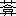

橘ノ
「此日、早旦自ら起たざるを知り、一二、後事を遺命し、且つ、如キレ斯クノ古来未曾有の大御代に遭ひながら、眼前、復古の盛儀大典を見奉るに至らず、況や、かねての抱負も、将に達するに向はむとして、今日はかなく世を去るこそ、返す／″＼も口惜しけれとて、切歯瞑目せられたり。聞く人、其志のほどを悲しまざる者なかりき」と、臨終の様を追懐したのは、彼の長男井出今滋である。（明治卅六年作、橘曙覧小伝）
この英雄風な最期の記述せられてゐる日は、京都では、既に東京行幸の為の訓諭が出るまでに、
その前日、八月廿七日には、紫宸殿に御して御即位式を行はせられた。大礼の則る所は古典にあつて、中古以来、儀装・冠服皆唐制に拠つたのを廃せられた。越前福井までは、まだ其御儀の仔細が、伝聞せられるに到らなかつたであらう。今数日、世を去ることが遅かつたなら、彼の末期の心は、如何ばかり明らかであつたことであらう。三日前（廿五日）には、越後柏崎で、日柳燕石が死んでゐる。彼とは風馬牛の生活を終つたのだが、同じ越路に来て、同じ思ひに没したことが、ある因縁を感ぜしめる。八月廿三日には、会津城の一部が落ちた。廿二日、嘉彰親王新発田城に入城ある。廿一日には、即位礼を行はせ給ふ旨の奉告に、奉幣使が、皇大神宮に向ふ。北越地方では、その十六日に、長岡藩の反将河井継之助が敗死する。十五日には、西園寺公望が、村松に入つた。此より先、六月、北陸道鎮撫使を罷め、会津征討越後口総督府参謀となつて居たのである。十二日には、総督嘉彰親王、越後三条に進まれてゐる。この六月、軍務官知事として、会津征討越後口総督として征途に就かれ、廿七日には、敦賀に
彼の死後、最近の
十六日には、皇学所・漢学所が設けられる。十七日には、和気清麻呂・楠木正成・児島高徳を岡山藩下に合祀することを許してゐられる。かうして、九月廿日には、愈、京都御発駕あり、廿一日石部、廿二日土山に著かせられてゐる。此日初めて、天長節の御儀を行はせられ、賜宴がある。之より先八月廿六日、聖誕日を天長節と称し、賀宴を賜ひ、刑戮を止めるよしの布告があつた。光仁天皇御宇の旧制に復したのである。此日、東北では、輪王寺宮使僧、総督四条隆謌の下に到つて謝罪する。廿三日、酒井忠篤（庄内藩主）降る。
九月廿四日、途上、皇大神宮御遥拝、四日市に入らせられる。南部藩・磐城泉藩。湯長谷藩・平藩皆降る。廿五日、桑名に到らせられる。長岡藩主牧野忠訓、謝罪降伏。廿六日、熱田に著かせられる。翌廿七日、熱田神宮御親謁。羽後松山藩・亀田藩降る。東征大総督参謀西郷隆盛、鶴岡入城。
十月三日、掛川に入らせられる。此日、伊達・上杉降伏の報せがある。又、六日、越前鯖江前藩主間部詮勝の出処疑はしきにより、帰国蟄居を命ぜられる。十月十日、藤沢に入らせられる。諸大名の扈従を多くして、自尊する弊を除かしめる命が出た。十一日、神奈川を過ぎさせ給ふ。その際、諸外国の船艦祝砲を奉る。十二日、品川に入り給ふ。此日、榎本武揚・大鳥圭介等、八隻を率ゐて箱館に出奔。大和柳本城主織田信及、崇神・景行二聖陵修繕の許しを請ふ。翌十三日、東京著御。江戸城を皇居と定め、東京城と称する。十七日、朝堂に臨ませられ、万機親裁の事告げ給ひ、詔して、祭政惟一の大典に基くことを示し給ふ。
これが、曙覧死去前後の世間の姿であつた。彼でなくとも、此間に生きて光栄を感じ、この休光を見ずして死なむことを悲しまぬ者はなかつたであらう。
彼はさすがに、詩人である。死ぬる恰も三月前、
五月廿八日より、病床にありけるまゝに、野山のけしきも見難く、臥してのみありけるにより、つれ／″＼なぐさむため、大きなるうつはものに水いれ、小き魚放ちおきて、朝夕うちながむ。
湛へつる器の水に 鰭ふらせ、海川見ざる目をよろこばす
顔のうへに 水はしらせて飛ぶ魚を、見かへるだにも、眉たゆきなり
顔のうへに 水はしらせて飛ぶ魚を、見かへるだにも、眉たゆきなり
△窓の月 浮べる水に魚躍る。わが枕辺の広沢の池
ひれはねて 小き魚の飛ぶ音に、寝 るともなくて 寝る目 あけらる
恰も明治代の正岡子規の境地である。而も其よりも、深く没入する所があり、又、時代の早さから来るうは調子の中にも、彼らしいものがある。曙覧がかうして臥してゐる間にも、天下のあり様は、刻々に著しく維新の大業に向つて変改して居たのである。如何に敏感であらうとも、一介の市井の隠士に過ぎない彼である。松平春嶽や、中根靱負（雪江）や、橋本左内等の福井藩の主従が、此間に経過した苦悩を、身を以て感じることは、固より出来なかつたであらう。江戸将軍家の親藩であつたゞけに、春嶽主従の忠誠は目立つたが、其と共に、板挟みの境遇に苦しみ、又薩州その他の圧迫に堪へ難かつたことは察しるにも、余りがある。だから、此等の人々の苦しみは、さうした間に、自由な立ち場に居た彼は、彼だけの交友範囲において、風流にことよせて、激励することが出来た。其とて、町人と士分とでは、身分違ひである。単に「志濃夫廼舎歌集」や、「橘曙覧小伝」の印象を我々が受けるやうなものでは、なかつたに違ひない。たとへば、野邨恒見に与へた歌、
愚にも まどへるものか。大勅 たゞ一道 にいたゞきはせで
勅 にそむく そむかず 正し見て、罪の有無 うたがひはらせ
後の歌、現実味は十分調子に出てゐる。併し輪郭を描き過ぎて、却て表現不足に陥つてゐる。つまり心はやりと、あまりに特殊事情に囚はれ過ぎた為である。恐らく、罪の有無は、勅に背くか背かぬにある。おのが身そこに惑うてゐるか、どうか糺して見て、疑ひ迷ふ心を霽して、勅に従ひまつれ、と言ふのらしい。「愚にも」の方は、少し悠揚とし過ぎてゐて、実感が逸れてゐるやうだ。世間には、かうした愚者が多い。さうではないか、と同感を誘つたに過ぎぬやうにも見える。が、山田秋甫さんの橘曙覧伝によると、当時此と時を同じくして詠んだと見られるものに、尚八首ある。皆彼の弟子に与へたのである。
大皇 の醜 の御楯といふ物は、如此 る物ぞと進め。真前 に――小木捨九郎主に
第三句聊か、平俗調に近づいた嫌ひはあるが、之を救ふに到るだけの力ある喜びが、一首に充ちてゐる。
さしたつる 錦の旗の下に立つ身をよろこびて、大刀とりかざせ――岩佐十助主に
三句以下の宜しさは、彼の純真な感情の出てゐる宜しさである。殊に四句を受けて、五句のおほまかで、
佐々木久波紫が大御軍人に召されて、越後路に下れる馬のはなむけに
同じ時また、芳賀真咲に
大皇の勅 に 背く奴等 の首引抜 て、八つもてかへれ
吉田重郎主に
大皇の勅 頭に戴きし功績 あらはせ。戦ひの場
山内某 （佐左衛門）
大皇の勅 頭にいたゞきて ふるはん太刀に よる仇あらめや
上の歌の中、「勅」を言はぬものも、皆勅命を奉戴することの光輝に感激してゐる曙覧の心が、露はに出てゐる。其と共に、当時都鄙を分たず、野に在つた人々の歓喜したのは、此玉の御声の揺曳を、草莽の身に受け奉る心をどりであつた。此昂奮ばかりは、今の世の我々にも、常に心に響き来るものがある。此と時を同じくして出来たらしいのは、最初にあげた二首を含む連作（四首）であつた。
示レ人
天皇は 神にしますぞ。天皇の勅としいはゞ、畏みまつれ
太刀佩くは 何の為ぞも。天皇 の勅 のさきを畏 むため
天下清くはらひて、上古の御まつりごとに復る よろこべ
物部 のおもておこしと 勇みたち、錦の旗をいたゞきて 行け
彼は日頃は、唯の歌人であつた。併し風流の外に常に心に蔵せられてゐたのは、此耿々の志である。日々に詠み、日々に楽しむ所を見れば、唯の市井に隠るゝみやび男に過ぎないのに、突如として、かうした気魄の歌を叫び出した。彼が、交る人々を多く武士に持つたからでもあらう。が又、彼の学問の伝統は、その志を文学に埋れしめなかつたのである。第一首は、辺土の武士の、進退に踟太刀佩くは 何の為ぞも。
天下清くはらひて、上古の御まつりごとに復る よろこべ
 する者のあるのを、喩したのである。
する者のあるのを、喩したのである。
天使の、はろ／″＼下り給へりける（るに、？）あやしきしはぶるひ人ども、あつまりゐる中に、うちまじりつゝ、御けしきをがみ見まつる
 、副総督として四条隆平が任命せられ、二十日、参謀を具して発足した。廿五日、若狭小浜に著いて、藩士等に、奉命の誓詞を出さしめた。廿六日である。二月に入つて、鎮撫総督を北陸道先鋒総督と改めた。十五日、一行福井に入つた。上の歌に見えた歌らしいのびやかな所のあるのは、まだ世間の響きが、最後の勢に達して居なかつたからであらう。「示レ人」四首の、本格を行くものほどには、堂々たる所はないが、却て軽みにおいて、正直を感ぜしめる。此よりも、前の歌と思はれるのに、
、副総督として四条隆平が任命せられ、二十日、参謀を具して発足した。廿五日、若狭小浜に著いて、藩士等に、奉命の誓詞を出さしめた。廿六日である。二月に入つて、鎮撫総督を北陸道先鋒総督と改めた。十五日、一行福井に入つた。上の歌に見えた歌らしいのびやかな所のあるのは、まだ世間の響きが、最後の勢に達して居なかつたからであらう。「示レ人」四首の、本格を行くものほどには、堂々たる所はないが、却て軽みにおいて、正直を感ぜしめる。此よりも、前の歌と思はれるのに、
大御政、古き大御世のすがたに立かへりゆくべき御いきほひと成ぬるを、賤ノ夫の何わきまへぬ物から、いさましう思ひまつりて
百千歳 との曇りのみしつる空 きよく晴 ゆく時 片まけぬ
あたらしくなる天地 を 思ひきや。吾目眛 まぬうちに見んとは
古書 の、かつ／″＼物をいひ出 る御世をつぶやく 死眼人
廃 れつる古書どもゝ動きいでゝ、御世あらためつ。時のゆければ
彼の歌の、感激によつて、頓みに歌口の変つて行くと謂つた所が、明らかに見えるものである。第一の連作には、稍及ばぬが、第二の四首よりは、遥かに立ち優つた古風の気魄が現れてゐる。其が「きよく晴ゆく時片まけぬ」「……時のゆければ」などの句に窺はれるのである。第三首目は、例の飄逸味が出過ぎてゐる嫌ひはある。此は前のを、鎮撫総督福井来着の時のものと見て、其よりも更に先だつ、慶応三年のものには違ひなからう。が、十月十四日の将軍の大政奉還上奏、十五日の勅許あつて直後の歌とは、断言は出来ない。なぜなら、彼の如き身分で、さうした出来事に対して、明確に事件推移の判断がつかうとは思はれぬ。其風聞が伝つた処で、必、半信半疑の間に彷徨したのに相違ない。「……立かへりゆくべき御いきほひ……」とあるのは、婉曲に言つたと言へば其までだが、大体もつと前から、察してゐたことでもあらうし、又彼にしては、極めて漠とした信念だつたのであらうから、十月よりも早く、又稍遅れて、さうした風聞が具体化して胸におちて来たのだらう。而も、之が古学・古典の効果だつたと言ふことを、沁々感じ、自分の専門だけに、自信を以て言うた所に意義がある。だが、小づくりに出来てゐて、感激よりも、機智の出て来る傾きのあるのが、くちをしい。その擬人法に似た言ひ方も、歌がらを低くしてゐると言はねばならぬ。併し考へて見れば、さうまで感激が一つ有様で、作物に続くといふことも考へられないから、かうした起伏も自然だ、と言へば言はれる。同時に、かう言ふことも言へる一面が、ありはすまいか。即、正義の道をとり違へて、江戸将軍に誠意を尽すを正しとする様な判断が、古書・古学に疎い人々の間には行はれてゐた。――道理から言へば、さうかも知れぬが、おのれ等に近い真実はこゝにあると言ふ風な、近きに溺れた人々が多かつたのである。共にいろはから説き訓すやうな事もせねばならなかつた。勤皇の為の啓蒙を、彼はその周囲に集る人にはして居たのだ。第一義の耿々の志を叫ぶのでなく、諄々と説いて教へると謂つた歌が、彼には相当にあつて、其が多少歌柄を落したといへよう。だが元々、彼の歌にはさう言ふ側もある。志士としての運動に携ることのなかつた、一人の学究らしい所が、其所にも顕れてゐる訣なのだ。あたらしくなる
武士
尊かる天日嗣 の広き道 踏まで 狭 き道ゆくな。物部
真心といはるべしやは。真ごゝろも、正しき道によらで尽さば
大綱と 天日嗣を先とりて、もろ／＼の目を編む国と知れ
天皇に 身もたな知らず 真心をつくしまつるが、吾 国道 ［＃「国道」の左に「クニツミチ」のルビ］
一・二・三はかうして導かねばならぬ蒙昧な武士の、まだ多かつたことを示してゐる。他藩すら、此と同じ佐幕党が多かつたのである。況して、福井ほどの親藩であつて見れば、江戸将軍に感謝の心を持つた者も、多かつたのである。見当に狂ひがなくば、此連作も、其頃に近いものであらう。大分くどい所はあるが、やはり二首目の歌に、境遇も、時代も出てゐる。達意は達意でも、「大綱と」は、道歌に近いもの言ひである。第四首は、之を文学化する情熱が足らぬ。此も亦、人を教へると言ふ目的に煩され過ぎて、文学を失うたのである。真心といはるべしやは。真ごゝろも、正しき道によらで尽さば
大綱と 天日嗣を先とりて、もろ／＼の目を編む国と知れ
天皇に 身もたな知らず 真心をつくしまつるが、
示レ人
○君臣 ［＃「君臣」の左に「キミオミノ」のルビ］品さだまりて 動かざる神国といふことを まづ知れ
此歌などは、当時ひとゝほりの知識ある者でなくては、君は天子、臣は公家・将軍・諸侯、殊に、将軍をさしてゐるのだと言ふことは、明らかには悟らなかつたであらう。多少学に入り立つた者或は、此道を少しは知つた者に、与へた歌に相違ない。曙覧の歌や、文章の中に、やゝ心得難いことが二つある。一つは、今までにあげたものゝ外に、存外王事に関聯して、情を抒べたものゝ少いことである。今一つは、明治以後の開化時代に遇うた古学者らの悲憤に似た歌の、既に相当にあるやうに見えることである。
此は、彼自身も自覚してゐたやうに、国事を憂ふるに値せぬ町人だつたに繋らず、其でも相応に、
曙覧の死んだ当時、長男今滋は二十三であつた。「榊の薫」などに見える今滋の作物は、たとひ曙覧の添刪は加つてゐるとしても、相当な力量が窺はれる。其にしても、「志濃夫廼舎歌集」は、彼の自撰である。今滋の考へは加つて居ない筈である。明治十一年印行の時も、原本のまゝ出したに違ひない。第一集の初め少しは、製作順かと思はれるふしがある。其と最後に近いものに、慶応三・四年のものが多いと言ふまでゞ、年代順に排列したものとは、どうしても考へられない。さうして国事に関係あるものは、四集・五集に纏つてゐるやうだが、尚他の巻にもちらばつてゐる。よつて思ふ。激越した勤皇の作物も、此作風からは、必多かつたものと思ふ。だが世態の推移が、予め測り難かつた時である。若し亦、何時人の目に触れて、禍を蒙ることがないとも限らない。だから、多くさし支へないものを列ねて、歌集・文集を編んだものと見る考へもなり立つ。此想像が当つて居たとすれば、彼の持つ古風の諷詠が、其間に湮滅したことになるのである。此感は、歌集よりも、文集において更に深まるのである。
何しろ、雲脚の変幻極りなく、所謂端倪すべからざる時代の
だがともかくも、彼個人としては此激しい動乱の間にあつて、処理すべきものは処理する必要を覚えたに違ひない。慷慨あまつて忌諱に触れさうな作物には、序詞を書き潜めて、題意を仄かにする事に努めたであらうし、又作物自らあまり露はに意趣を示してゐるのは、省き隠したこともないとは限らない。其故にこそ、今ある曙覧自撰の「志濃夫廼舎歌集」が、一面あまりに文学式な、又享楽態度に見える側が、目立つのかも知れない。
元来、国学者の思想にも、時代の推移があつたので、賀茂・本居両翁並びに其息の濃くかゝつた人たちの間には、尊皇から、引いては攘夷に到る情熱は見えても、討幕の気はわりに薄く、却て、江戸讃美に傾くものすらあつたのである。此がすつかり面目を改めたのは、平田門の人々に初まると見てもよいのである。勿論此には、例外とも言ふべき人々もあつたことは否まれない。曙覧は、伝統から言へば、伴蒿蹊門から宣長門に入り、更に大平に学んだ田中大秀の弟子である。学風も亦自ら、平和な
かう言ふ時代では、少しの類似が相牽くと共に、瑣細な相違が亦、甚しく相撥ねる形をとるものである。慶応から明治へかけて、ともかくあれほどはたらいた春嶽・雪江等主従が、わりに幸福な風に見えぬのも、此為であり、春嶽が自ら、曙覧の藁屋を訪れ、雪江が屡世間外の誼みを彼に示したのも亦、此為であらう。単に索漠たる辺土の領国に、纔かに見出した芸の緑地として、彼を見たとばかりも考へられない。当時の福井藩は、猶他藩と同じやうに、必しも打てば響くと言ふほどには、春嶽の思想に靡く者ばかりではなかつたのである。而も、雪江の斡旋によつて、曾ては平田の門ものぞき、現に宣長の孫弟子の資格を得て、地方としては、重く見られた彼である。謂はゞ、郷土においては、一つの名物になり初めて居た彼である。さすれば、藩主が之に、恵みを垂れようとするのはあるべきことである。併し既に此頃の春嶽は、心国事に忙しく、宗家徳川の運が、長閑に見過されずなつてることは切に感じてゐた。田安から入つて、越前家を嗣いだ彼である。それに、西洋事情に通じた左内の影響の多かつた彼であつて見れば、自ら前代凡庸の諸侯が懐抱せなかつた、複雑な内容を心に持つて来て居たに違ひない。だから恐らく、曙覧の如きは、一隠士の稍抽んでたものと感じられたのであらうが、固より其以上に考へられる訣もないのである。或は思ふ。曙覧こそ、かうした春嶽主従の思想の影響を、自らの教養の上に移し育てたと言ふことになるのではないだらうか。其だけでも、世に碌々として居た和学者輩に比べれば、彼の学者として、又文学者としての優れた位置を占むることを示してゐるのだと思ふ。彼の――成績を多く遺さなかつたけれども――学は根柢のあるものであつた。さうして更に、彼の文学は、此根柢に根ざして、力強いものを表現して居たのである。かうした力強さの現れる所、或は彼自身すら、うつかり疑ひの目を
 る者に触れることの危険を考へねばならぬ所があつたであらう。其為にこそ、其集の作物の排列が、前後を濫りにした痕を残したのであるまいか。同時に又其が、彼にあるべくして存しないことのいぶかしい――、時勢に向けての激越した文章・和歌の整理せられてゐることを仄めかすのではあるまいか。
る者に触れることの危険を考へねばならぬ所があつたであらう。其為にこそ、其集の作物の排列が、前後を濫りにした痕を残したのであるまいか。同時に又其が、彼にあるべくして存しないことのいぶかしい――、時勢に向けての激越した文章・和歌の整理せられてゐることを仄めかすのではあるまいか。
ある時
何ごとも時ぞと念ひ、わきまへて みれど、心にかゝる世の中
忘 むと思へど、しばしわすられぬ歎きの中に、身ははてぬべし
仮りに同じ趣きの、
水車 ころも縫ふ世となりにけり。岩根 木根立 物言ひいでむ
おなじく、「ある時」と題した作物である。題は、ある時の感慨を述べたことを示したにしても、前の二首には、題として韜晦めいた口つきが現れてゐる。此だけの詞書きでは、誰にも、それの出来た境涯は、完全には察せられまい。而も「何ごとも」の方は、「……念ひわきまへて」だの「……みれど心にかゝる世の中」など言ふ句々の相関から来る語感は、相当に卑俗なものがある。かうした調子が出たのは、心が可なりくづほれ、めいりこんでゐた時に相違ない。其くどき水車の方は、ある時と言うてはゐるが、「偶感」と題してもよい程のものである。併し歌自身は、ほねつぽい所を持つてゐる。機械力に対する理会なく、文化社会になり行かうとするのに反感を持つた様子が、露骨に出てゐる。岩根・木根立物言ふ時代は、日神隠れ給ひ、草木に到るまで妖言を発した。そのやうに、こんな不思議の行はれる――妖術をときめかすやうな時代には、ついで万妖悉く起るに到るだらうと言ふのであつて、もとより珍奇な物に接しての喜びを歌うたものではない。謂はゞ、新文化に対する呪ひの詞である。この西洋嫌ひは、だが決して彼一人ではなかつた。世間一般が新しくてよいものを、善しと認めるに到るまでには、まだ／＼年月が、いつたのである。だが、此歌で見ると、正否はともかくとして、根柢ある物言ひらしく感じられる。それが、古典から来る力強い一種の表現論理なのである。
勿論「ある時」の題のあるものが、皆さうした傾向なのではない。「をりにふれてよめる」と謂ふ単なる偶感に過ぎないのである。
ある時
友ほしく 何おもひけむ。歌といひ、書といふ友ある 我にして
草 さひづりめぐる朝すゞめ 寝耳に聞きて、時うつすかな
ひよりぞと 思ひて出づれば、風さむし。全 く好き日は、日にも得がたし
私の無き空にすら、全くよき日は乏しきを 人はいはんや
如何にも偶感による偶成らしく、おのれ自らも、おのれに囚はれることなく、極めてひろ／″＼とした気持ちに、詠み出でゝゐる。ひよりぞと 思ひて出づれば、風さむし。
私の無き空にすら、全くよき日は乏しきを 人はいはんや
第一首は、類型でもあり、又其を幾分か抜け出た所は下句に見えるが、畢竟かうした歌は、作者を背景とし、註釈とすることで、価値に増減の感じられるものである。第二首も、全く類型はない訣ではない。が、「さひづりめぐる」だの、「寝耳に聞きて」などが、懶さを見せて新味を覚えさせる。其よりも、第五句自身と、其配置が、此歌を出色なものとしてゐる。第三首は、下句が全く抽象になつた上に、如何にも物言ひが常識を出でないものを感じさせる。が、歌として見る上は、上句もよく、下句は今少し勝れてゐる。たゞ其が離れ過ぎてゐるので、――之を接触させて感じようとすると、道歌めいた印象を受けないでは居られない。此歌に曙覧としてのよさを保たせようとするなら、上下句の繁りの緊密を緩めて感じる必要があると思ふ。「私の無き」と言ひ出した第四首は、まづ概念めいたものを感じるのだが、此とて曙覧の語感や、語勢を考へにおいて見れば、棄てられぬよさは、持つて居る。殊に「人はいはんや」の様な、無成算な、技工の隙き間から、突如として出て来た、半成の新技法を見ると、さすがだとは思ふ。此漢文くづしと国文脈との間に醸されるある混成感、前の「……日は、日にも得がたし」も、其から来る好感が人を牽くのである。之を又、曙覧全体におしひろげても、彼の作品のよさは、此点が余程与つてゐるやうである。尚此歌に
其等は
ひとりごとに
歌よみて遊ぶ外なし。吾はたゞ
赤心報国
国のため念ひ痩せつる腸を 筆にそむとて、吾が世ふかしつ
仇に向き

正宗の大刀の
国を思ひ寝られざる夜の 霜の色。月さす窓に見る 剣かな
国汚す
松の葉の夜おつるにも 耳たてつ。枝ならさゞる世とは、おもへど
失題
何わざも、我が国体 にあひあはず 痛く重 みし物すべきなり
まのあたり たよりよげなる事がらも、後に到りて さあらぬが多し
恐るべし。末世 かけて 国体 に 兎毫 ばかりも、疵のこさじと
事により、彼が善き事もちふとも、こゝろさへには、うちかたぶくな
其のわざを取り用ふれば、自 ら 心もそれにうつる恐れあり
目のまへの事いふならず。禍の遺らむ末の世を 思ふなり
潔 き神国の風 けがさじと こゝろくだくか。神国の人
此も失題といふ程のものではない。唯序を書けば、長くなり過ぎさうだといふだけのことのやうにも見える。歌には攘夷の情熱といふより、西洋文化の、武器といひ、機械工業といひ、段々入り込んで来るのに憂ひを持つて、末はどうなつて行くことか、と御国の後の姿を観じたのであらう。古典を生活の指標とし、古典を内生活に宿さうと努めた国学者の一人であつて見れば、当然深くさうした憂ひを抱いたに違ひない。此が、明治の御代になつても、尚長く続いて、まのあたり たよりよげなる事がらも、後に到りて さあらぬが多し
恐るべし。
事により、彼が善き事もちふとも、こゝろさへには、うちかたぶくな
其のわざを取り用ふれば、
目のまへの事いふならず。禍の遺らむ末の世を 思ふなり
橿原の宮に還ると思ひしは、あらぬ夢にて ありけるものを――矢野玄道
一層深刻な叫びになつたのであるが、新旧の交替ほど春嶽は、かうした新文化には、著々と手を染め、而も新知識橋本左内を重用した春嶽である。武備についても、鉄砲隊を組織して、弓・長柄組を廃め、福井でゑんぴいる銃を製造し、大砲を鋳て、蘭法砲術師範を置いた。又洋学を奨励して、藩の明道館において、講義せしめた。かうした一方、米国の要求を拒絶すべきことの献策をして、開国論を否定してゐる。これは皆当時として、最正しい策ではあつたが、順調には進まなかつた。而も、春嶽の計画は恐らく、纔かに側近の者の外は、藩中の人々にも徹しなかつたであらう。又彼自身の内にすら、当時の人の持つて居た新旧、内外の矛盾があつたに違ひなかつたであらう。勿論さうした新しい世間を夢想だもしなかつた筈の曙覧などには、見当もつかぬことであつたらう。ある部分は心を喜ばし、他の部分では憂へさせられる、と謂つたことが多かつたらう。其に、刻々に迫つて来る新時代に持つたとりとめぬ脅迫感、さう言ふ風に、彼には、救ひなき前途を思ひ悩むことが多かつたらう。此連作も、さうした時代の苦悩が、表現せられてゐるのである。
「何わざも」の歌には、国体との合不合を見定めるやう、慎重な態度を要求してゐる――対談めいた気分が出てゐる。「まのあたり」には、便宜さうな面に囚はれて、後患を顧みないことをおつとりとだが、反省させようとしてゐる。一時の事にかまけて、天下後世に恨事を残さぬやうにと言ふのが、「恐るべし」の歌である。今を糊塗する為に、永い憂ひを思はぬ事を戒めてゐるのである。此二首も、濫りに憤つてゐるのでなく、「人に示す」態度である。外国文化をとり入れる時に、何時も与へられる非難は、曙覧も之をしてゐたのだ。「事により」が、其である。つまり、蘭方医術や、兵術のよさを彼は認めてゐるのだが、心酔して行く当路の人を見てゐると、不安に堪へられないのである。人に与へる為に作られたもので、独り言でないことは、感激よりも、寧、理論風に出てゐる所でも察せられる。「こゝろさへにはうちかたぶくな」というたのは、忠言であつて、叱
 してゐるとは考へられない。「其のわざを」を見ると、もの柔らかに注意を与へてゐる気味は、前の歌よりも、一段である。連作とは言へ、此歌少し独立性が欠けてゐる。互に理会しあつてゐる人に言うてゐる趣きの明らかなのは、「目のまへの」である。あなたは、私が目前の憂ひに囚はれて居る。児孫の世を思へと言ふが、その末の世を思へばこそ、かうして忠告もするのだ。今目前の事にかゝづらうて、禍を児孫の代に残すことを虞れゝばこそ、かうも言ふのだ、と人に思ひ返させようとして居る風が見える。唯、適切にはどんな事件に関つてゐるのか、考へつかない、ちと雲を掴む様な処がないでもない。此一聯、恐らく夷狄の風に泥み行く世態を憤つたものと言ふ風に見られさうだが、さうは見られないのである。
してゐるとは考へられない。「其のわざを」を見ると、もの柔らかに注意を与へてゐる気味は、前の歌よりも、一段である。連作とは言へ、此歌少し独立性が欠けてゐる。互に理会しあつてゐる人に言うてゐる趣きの明らかなのは、「目のまへの」である。あなたは、私が目前の憂ひに囚はれて居る。児孫の世を思へと言ふが、その末の世を思へばこそ、かうして忠告もするのだ。今目前の事にかゝづらうて、禍を児孫の代に残すことを虞れゝばこそ、かうも言ふのだ、と人に思ひ返させようとして居る風が見える。唯、適切にはどんな事件に関つてゐるのか、考へつかない、ちと雲を掴む様な処がないでもない。此一聯、恐らく夷狄の風に泥み行く世態を憤つたものと言ふ風に見られさうだが、さうは見られないのである。
ある時作る
神国の神のをしへを 千よろづの国にほどこせ。神の国人
咏剣
七重にも手もて曲げなば、まがるらむ。
剣の歌が重つて出た縁によつて、其傾向について観察して見るのも、むだではなからう。
人の刀くれけるとき
抜くからに 身をさむくする秋の霜 こゝろにしみて、うれしかりけり
間十次郎光興
血つきたる槍ひきさげて、落ちくさの柴のかくれが 我ぞさぐりし
近松勘六行重母
剣大刀 焼刃に 我と身をふれて、励ましやりつ。仇ねらふ子を
剣
水奔る白蛇なして きらめける焼大刀見れば、独ゑまれつ
竹内篤主軍人の中にある
大刀とりて いづこへ行きし。あひそめて、まだ日もあらぬ妹を 打すて
剣
芳賀真咲が江門へゆくに
大刀の緒にすがりこそせね。雪霙 ぬれむ旅路に やりたくはなし
河野通雄が刀佩き、氏名よぶことを公より許されける祝に
許されて 剣とり帯く民の長 。民はぐゝみに、ふるへ。利 ごゝろ
咏剣
肝冷す腰の白蛇 吾が魂 はうづみ鎮めつ。山松の根に
狛逸也君の、其御名の心ばへを謌に詠みてくれよ、との給へるにより詠める
剣大刀壁によせおきて、胯長 にいねつゝ 高き鼾かくらむ
詠大刀（長歌略）
――藁屋詠草より――
 与
与
三種神宝――内、一首
夜のまもり ひるの守りと、日の御子のかしこみませる 草なぎの剣
（山田秋甫氏編、橘曙覧全集拾遺）
剣に関する歌を、かうして並べると、何の底意もないやうに見える。だが、何となく、曙覧の生活の色々な方面が、胸に流れ込んで来るやうな気がする。彼は町人ながら、武士との立ち入り多く、早く「抜くからに」の歌などもあり、さうした作物が、藩士の間にもてはやされ、揮毫にはさうした物をと、故らに指定して頼まれる事が多かつた為に、又曙覧の持つよさには、かうした和漢両様の古典のよい響きを、極度にとり入れて居る点があるのであつた。而も、かうした選択の行はれる為には、基礎になるものがあつたに違ひない。彼が、あらゆる当時の文学・非文学の律語で以て表現せられたもの――たとへば、俳諧・狂歌或は、小唄の類に到るまでの相応の教養が、彼の作物には見られる――をとり入れた所から来た自由な表現や豊富な語彙が、彼の作物をあゝまで、自在ならしめたのであるが、而も其にも、ある根柢があつて、核心のない声調にうかれてゐるのではなかつた。曙覧の持つ格調の本質とも見るべきものは、何であつたらう。
彼の根本教養になつた所の早期の学問、漢文学である。伝説はあるが、稍明らかでないのは、其漢学の系統である。南条郡大道村――今の南日野村、西大道の法華宗妙泰寺の明導から受けたのが、其手ほどきになつてゐる。後、京に奔つて暫らく児玉旗山の塾に居たと言ふ。ともあれ、かうした根柢が、凡出来た上に、国朝の古典に、稍、遅れて接したものと見るべきであらう。短歌の歴史を通じ、又近く江戸時代の歌人の作物を見渡しても、彼ほど漢文学の味ひ、漢詩文の格調のよさを活して来た者は少いのである。其万葉を最愛したのも、学統から見て、一往不自然ではない。が、宣長系統には、平安朝文学に対する理会が、進み過ぎたほどにあつた。彼のやうに文学なら、何物でもとり入れると謂つた素質からは、恐らく新古今などに直に
春嶽の「真雪草紙」によると、鏑木（？）尚平の福井に来たのは、二度だとある。はじめは、天保七・八・九年頃で、後の一度は訣らぬ。が、凡ちようど、曙覧の家を弟に譲つた前後になるだらう。尚平から直接に習うたかどうかは訣らぬが、古風の歌の福井藩に行はれた初めを、曙覧二十五・六・七歳頃からと見れば、其影響は大きにあつたに違ひない。其から後に、三十三歳の大秀入門となるのである。
かうした彼だから、その上、学問よりも寧、創作の方に深く入り立つた彼だから、――学における創見は、可なり鋭いものを見せ乍ら、著述はさほど多く残さなかつた彼でもある――其学説も、主義も、凡彼の歌の上に出て来てゐる。だから、歌においても、他人に比類のない「議論歌」とも言ふべきものが出て来てゐるのだ。三井甲之さんの主張した議論を持つた歌に対する自覚は、やはり曙覧の作物に対する理会などが、背景になつて、之を促したものでないかとも思はれるのである。
恐らく曙覧ほど、其持つて居る素質やら、好尚やらを文学に活して来た人は、江戸時代にはほかになからうと思はれるし、其上他人の試みなかつた方面にまで手を伸べて行つたのは、其持つて生れた傾向が、時代の歌の欲したあらゆる方向と、当時においては、ぴつたり叶つて居たからであらう。
そゞろによみいでたりける
人臭き世にはおかざる 我こゝろ。すみかを問はゞ、山のしら雲
梯 たてゝ いつかのぼらむ。短 山 高山 神のいますいほりに
人の目に見えぬ高山 短山。神のいはりを覘 くよしもが
体 といふ 宅 はなるれば、天地と 我の間に、垣一重なし
天地の間に 隔なき魂を しばらく 体の つゝみをるなり
物皆を 立つ雲霧と思へれば、見る目 嗅ぐ鼻幽世 と同じ
幽顕 一重の蝉の翼 も支 へず。人の臭 ［＃「臭」の左に「カ（？）」のルビ］もたぬ吾まなこには
美豆 山の 青垣山の神樹葉 の 茂みが奥に、吾魂 こもる
厳凝 と 神習 ゆく斯 吾魂 。いよゝます／＼ 厳凝してむ
第一首は、我が身は、此人臭に充ちた世の中にとゞまつてゐるが、心は遥かに、かの山の白雲立つあたりに到つてゐると言ふので、隠士の境涯を詠んだものである。そこに多少漢士風のものゝ感じ方が窺はれる。ところが、二首目になると、山のしら雲の聯想が、大祓詞の高山・人の目に見えぬ高山 短山。神のいはりを
天地の間に 隔なき魂を しばらく 体の つゝみをるなり
物皆を 立つ雲霧と思へれば、見る目 嗅ぐ鼻
かう言ふ風に、連作の製作順を追うて辿つて行つて、彼の心の移動が極めてよく訣る。かう言ふことは、他の歌人には、まづ望まれぬことであらう。此点だけから見ても、「志濃夫廼舎歌集」の、他と撰を異にした様々のよさの出所を、思はせられるのだが、その中、第一に見るべきは、製作態度の端然たる点である。観照が、表現と叶つてゐるかどうかゞ、常に大切であるが、表現はたとひ逸れて居ても、観点の痕がはつきりと見え、而も其が極めて確かなことに於いて、彼以上の人はさう／＼はないことを思はせられる。だから、之に感興が随伴すれば、どのやうな作物が出来るか、測り知れない、かう言ふ気がする。事実、曙覧の作物の優れたものは、さうした条件の整うて出来てゐることが多いのである。
所謂、議論歌といふべきものも、こゝまで、彼は進めて来てゐたのである。さうしてある場合は、ある程度まで成功してゐる。其事については、いつか述べる時が来るだらう。今は、其側の叙述は省きたい。
彼の神道観は、決して浅いものではなかつた。凡こゝまで入り立つた人は、国学者にも多くはなかつた。此は偏に、神道の論理を闢くものとして歌の表現によつたことに力があるのである。だが、同時に、多くの国学者がさうであつたやうに、彼にも彼相応の、儒学の印象が、神学観の上に出てゐることは争はれない。其とさうして其上に、其を超えて出た純粋な古代論理が、彼には見られるのである。
彼の、漢学・漢文学の影響を止めてゐ乍ら、国学者或は歌人としての自覚を示したものは、其著述に散見してゐる。こゝには、歌と詩とに関する一条を抜いて、彼の理会の博いことを告げたい。「囲炉裡譚」の末段である。
小沢蘆庵翁の歌に、「いにしへは、大根 はじかみ 韮 茄子 、瓜のたぐひも、歌によみけり」といへるは、歌をむげに狭くとりなし、古き集どもに例ある物の外には、題もたやすくはものせず、なべて海月なす筋も骨もなきものに、読みそこなひ来れる悪癖を看破せられたるものにぞあるべき。……近き頃、広瀬旭荘といへる人が、享保・元禄のころほひの詩人の、琴柱に膠すと言ふやうなる風体をあざけりて、白雲明月ノ句、多シト二於魚卵ノ繁キヨリモ一といひたりしも、蘆庵翁のいきどほりにひとしき心ばへと見えたり。何れの道にも、才の活かざるばかりくちをしきものはあらざりけり。かく寐言のやうなることのみよみふける哥人の多きより、すこしも学才ある人などは、歌をたゞはかなきものに思ひうとんじ、たけきことゝは、詩にのみ赴くめり。然 て世を経るほどに、歌は文盲なる者の手に落ち入りて、いよ／＼狭く、心浅きものになりて、詩の人情・世態・雅俗にわたりて言ひ通るに、けおされむとさへするに到れり。哥人とあらむ者寐 きたなくする目をよくさまし、此に憤りを発 し、思ひを凝して、よみ口の鋒 を鋭 にし、其事に随ひ、其物に因り、彼方此方のきらひなく、幽玄・洒落・麗妍・澹泊・殷富・凄涼・勇壮・温柔・変化自在の臂を張りて、毛唐人の糟粕嘗むる詩人の陣を突き崩し、戎語 囀りちらす舌引き抜きくれむと、国風の旗さし建て、古言の鼓うちひゞかせて、後 向かじ、背見せじと、進まざらむや。勇まざらめや。
［＃改ページ］
「……さいつとし、天の下のみまつりごとあらたまらむとせし頃は、篤 しき病ひに煩ひで、今はのきはと見えたりしかど、誠ぬしが都よりの還 さに、立ちよれるを引きとゞめて、衾手づからかいのけて、ありさまどもたづね聞き、今日こそ身のいたつきをも忘れたりけれ、と喜ばれしとぞ……」
「志濃夫廼舎歌集」のはじめて世に出たのは、明治十一年であつた。恐らくその開板に便宜を与へたと思はれる近藤芳樹の書いた序文は、短歌の本質と、橘曙覧の作物の価値とを、此時代としては、よく理会した書き物であつた。芳樹に此依頼に行つたのは、曙覧の門弟太政官主記佐藤誠である。其で、此話をしたのも、右の佐藤氏であつた。曙覧の長子井手今滋さんの書いた「小伝」――橘曙覧全集――には、「如レ斯古来未曾有の大御代に遭ひながら、眼前、復古の盛儀大典を見奉るに至らず、況や、かねての抱負も、将に達するに向はむとして、今日はかなくも世を去るこそ、返す／″＼も口惜しけれとて、切歯瞑目せられたり。」とあつて、理想せられた大丈夫の形が出てゐる。
橿原の宮に還ることは、国学者の等しく望んで居た黄金世界であつた。さうして其が実現せられるに近くなつて、死んで行かうとするのだ。歓びと
曙覧の内には、平田学の影響から来たものがなかつたとは言へぬ。又篤胤等を尊重した痕も明らかだ。彼の庇護者と見るべき福井藩の重臣中根雪江は、平田門に入つた人である。又門人芳賀真咲（矢一博士の父）に与へた歌――篤胤の書に書き添へよとの依頼に、
これやこの 書看 ふければ、夜七夜も寝でありきとふ 神の筆あと
などを考へると、一部の国学者が、平田派に持つて居たやうな敵意などは感じられない。だが、此派の学者のやうに、理想国を空想する様な考へなどは、持つて居なかつたと見る方が、正しいのではないか。この一条を外にして考へると、此歓びを見果すことの出来ぬ身のかひなさを、歎いた様が、如何にもよく納得出来る。誠の方の伝へになると、更に適切に曙覧の心が現れてゐる。今までの調査では、曙覧の勤皇の情熱に燃えてゐたことは訣るが、勤皇運動に携つた痕は見られないのである。
若し倖に余命があつたら、松平春嶽の推挙で、明治政府治下の官吏・助教・宮司のいづれかになつて居たかも知れぬ。併し其も亦、おのが性向に合はぬものとして、断つて居たかも知れない。ともかく町人出の人であつた。福井の由緒古い町人の家に生れた彼であることから、考へはじめねばならぬ。
幕末の志士の中には、百姓・町人の旧家から出たものが相当にあつた。彼等は学問をして、御家人の生活と、自分等の生活との岐れた理由を、知ることが出来たのである。だから、新しい感激深い運動に携ることが、彼等を士分の者同様の自覚に据ゑたのであつた。だから、若し曙覧が積極式な生活法を採る人だつたら、さう言ふ機会は我らもあつた筈である。現に天保の初年、二十を越したばかりで、京都に奔つて、児玉塾に入つて居る。又二十八歳の天保十年には、江戸に遊んでゐるのである。平田鉄胤門その他、皇漢の学徒の実行派に近寄る機会もあつた筈を、事無く帰郷してゐる。偶然の機縁が彼に迫らなかつた事もあらうし、又元々さう言ふ激越した質を持たなかつたものとも見られる。
それに第一、彼の育つた福井・武生は、幕末動乱の時代をわりに、家中は静かに経過した。藩侯や、二三の重臣の上には、事はあつたが、藩士の脱走して国事に奔つた者なども、まづなかつたと言ふことが出来る。此気運の間に、曙覧は成長してゐたのである。だから思想として、知識として、すべて国学の先輩の説く所は包容し、又興奮を感じた人であるが、之を実行に移さうとする人物ではなかつた。それに、今一つは、生活上の原因があると思ふ。三十歳を過ぎて、彼は家を弟に譲つて出てゐる。最若く見つもつても、二十九又は三十、遅く考へて見ると、三十三以後のことである。町人の子、殊に家の後取りが、学問に身を入れると言ふことは、当時の人の見解からすれば、一種の漂浪癖がついたのと同じことである。若し、若い彼の京都への出奔が、町人出の志士を見習うてのことゝすれば、尚の事である。尤さうした見方も、全く出来ない訣ではない。その当時頼つて行つたのは、頼山陽門下の児玉士啓であつた。年少よりの師匠明導の指図によつて、詩人児玉旗山に就くことになつたとして、ともかく家人らの解釈の中には、此頃京都における学徒の気風についての虞れが籠つて居なかつたとも言はれない。だが此点はすべて、今の処まづ、平凡に家業を棄てゝ遊学した者をひき戻したものと見るのが、当を得てゐるであらう。
儒学その他の立ち場から、当時の風潮を吸ひこんで、勤皇の志を抱くことはあつても、まだ学問にも文学にも、自覚のなかつたのが、二十五歳前の彼であつたと言へよう。
松平春嶽は、福井に古学・古体歌の行はれるやうになつたのは、天保七・八・九年頃の事かとしてゐる。年月が漠としてゐるが、細かく数字をあげてゐるのは、却てわりに記憶が離れ過ぎて居ないことを示すのだらう。鏑木尚平――姓氏覚え不申とあるが、山田秋甫さんは、鏑木姓と聞いたと註してゐられる――と言ふ人が遊歴して、こゝに新しい種をおろしたものだとしてゐる。中根雪江・平本良載・渥美新右衛門等が之に学んで、学も歌も、其感化を受けたとある。春嶽自身福井藩勤皇の導きをなした者は、右尚平の古学・古歌の運動であるとしてゐる。回想記の性質上、多少自身の経歴に集注して考へ過ぎる傾向もあらうが、大体は頷かれる。其以前に全く復古運動の芽生えもなかつたとするのは、時が降り過ぎるかとも思はれる。が、福井藩の動き方から見ても、立ち上りが遅かつた理由が、こんな処にあると言ふ理会もつく訣である。かうした中根靱負が江戸詰め中、平田篤胤門に入り、勤皇の志を立てるに到つたと記述してあるのも、順序は叶つてゐる。中根氏三十・三十一・三十二、曙覧二十五・二十六・二十七の頃、尚平福井遊歴があつたのだから、篤胤没年の天保十四年までは、六年以上の年数があつた訣である。
「夫よりして、橘曙覧等も、雪江の奨励によりて、古学をなす。田中大秀の門人となりたり。曙覧の功も甚多し。故に和歌の道に功労ある者は、渥美新右衛門・中根雪江・橘曙覧。平本平学……福井にて勤王の志を立てたるもの、また勤王の起りしは、外になし。中根雪江一人也。勤王に功労ありし人は、此人の上にいづるものなし。」
中根靱負を間にして、曙覧を見て居た春嶽は、恐らく過不足なく此二人の交渉を見たであらう。天保七・八・九年、彼二十五を過ぎて、学問・文学の覚悟が定まつたことが窺はれる。さうして其先導者となつたのが、中根氏だつたのである。此様子は、雪江自身の「中根師質行状」にも書いてゐる。
「余は始の程こそ、先達めきて物しつれ。暇なき官路に老い朽ち果てにたるを、翁はたゆまふ事なく……今はしも仰ぎ瞻るさへ目ばゆかるを……」
此時以前、既に相当の造詣を示してゐた曙覧の学問・文学が、福井藩の士人に認められ、愛せられてゐたに違ひない。さうして其等の人々と文雅の交りをしてゐる内に、此まで考へなかつた高い理想が、持ち来されたのであつた。今までの文学遊戯の上に、崇高な目的が見出されたのである。古歌を以てする古学の道は、更に古義神道に到らねばならぬといふ事であつた。従来はかうした目的を忘れた末梢の遊戯であつた。之を悟つた士人の中に、最進んだのが、中根氏であつた。国学者の理想は、かうして、福井藩に入つて来たのである。かうして見ると、福井藩における勤皇は、文芸復興の清純な歩みから出たもの、と見てよい。少くとも、復古の情熱は、古学のつきつめて尖鋭になつた古歌の形を以て、燃え立つて来たのであつた。
曙覧の江戸に出たのは、二十八歳、天保十年のことであつた。勿論江戸は此時限りでなく、恐らく此前にも、武生の伯父の使ひとして行つたことはあつたものと見てよい様である。学問に、ある自覚を得て直後の東下りだから、たとひ目的は何であつても、受けて来た影響は深いものだつたに違ひない。其に遊学の為といふには、あまり短日月の事らしいから、彼の覚悟には根柢は出来た旅だつたにしても、学者の門を叩くとか、道を聴くとか言ふ目的ではなかつた、と思うてよい。なぜなら、一度でも学者の門を訪れゝば、既に入門したことになり、師弟関係の成り立つのは、当時の姿であつた。学匠はその門人帳にも記入しようし、又曙覧自身、誰の門を訪れたと言ふことを誇つて言はぬ筈もない。思へば、此前年の九月には、田安斉匡の子慶永が、福井藩主松平斉善の嗣子となつて、翌月封を襲いだ。此が春嶽である。さうして此年は、在府してゐたものと見られるから、従つて中根以下の人々も、江戸在番であつたであらう。さうした機会に、曙覧は江戸へ出る都合が出来たのではあるまいか。此年、曙覧の出た正玄家等の橘七屋敷の宗家橘宗賢――歴代宗賢を称へる――家の再建があつた。前々年城下火事で焼けたのであつた。藩侯から松材あまた下して、此国の名族の家を復興させようとした。宗賢家では、新築した家を賜松館とつけ、又曙覧に嘱して歌を詠ぜしめた。
此二首の中、前一首は「万代までも栄えたらなむ」と言ふ風な旧風のものである。後のものには、「松の棟木は、君がたまもの」と謂つた風で、後の自在な歌口の窺はれる所がある。
此まで解釈せられた曙覧の性格観からは、稍外れる様だが、或は、昔からの由緒を申し立つる陳状役に選ばれて、江戸へ出たものと思はれぬでもない。賜松館には、彼の関係あつたことは、其記文の間にも見えるやうだ。だが此歌などは、曙覧の自選になつた「志濃夫廼舎歌集」には出て居ない。此は明らかに彼の態度を表してゐるものと言へる。つまり自覚以前の歌は一切棄てゝ顧みなかつたと言ふことである。厳重に謂へば、彼に記念すべき天保九年・十年を以て初めとすべきであらうが、尚少し外的事情の之を限定するに足るものが乏しい。其で、彼自身飛躍のあつた年と言ふ考へから弘化元年の飛騨入りを以て、境としたものと察せられる。
此年以来、彼の学問は伝統あるものとなつた訣である。今日の我々にとつては、学問と文学との間に、さほど密接な関係を考へることは、不自然である。併し前代の人にとつては、歌は即学問であり、尠くとも学立つて歌はじめて正しとしたのだ。宣長門の田中大秀に入門したことは、国学者としての世間資格を具へることになつたと共に、彼の歌も、伝統正しいもの、と自信してよい訣になつた。
此前年――天保十四――閏九月には、平田篤胤が死んでゐる。若し、今数年寿命を保つて居たとしたら、彼の門人帳には、曙覧の名が書き加へられることに、なつたかも知れなかつた。
篤胤の死んだことは、彼に大秀入門の決心を堅めさせたもの、とも考へることが出来る。八月大野路を穴馬越えして、美濃
「藁屋文集」の「奉レ斎二祀本居桜根大人一而於二大前一
此で正式に刺を通じて、入門の礼を取つたことになるのである。而も昔の人の心は、かうして、二重の師弟関係の温さを持つたのである。宣長の弟子である所の大秀に事へることは、同時に宣長に事へることである。単に大秀を間に立てゝ、宣長を崇めてゐるだけではないのである。其と共に又、大秀に事へることが主となつて、宣長を思ふ心は閑却せられてゐる訣でもなかつた。結局は、宣長の開いた学統一筋、どの点にも中心を捉へることが出来たのである。此は、先にあげた祝詞及び、「師翁の御許に、飛騨国に物学にまゐでゝよめる」長歌との間に、今人には矛盾に感ぜられさうな、又功利式に考へられさうなものあるを虞れて言ふのである。
「……まな柱 学びの親と、天つ水 仰ぎまつりて、大船の 頼まむものと、むらぎもの 心は思へど、飛騨人のうつ墨縄の 速けく往きてもとはず、玉くしげ 二年三年、もみぢ葉の年を過ぎ来て、……牡鹿なす 膝折り伏せ、鵜じもの うなねつきぬき、おくて田の 遅れし我とめぐみまし、あなゝひまして、教へ子の列につらなべ、ときさとし教へまさねと、しづの男が仮り菴のいほに引く板の たゞひたすらにこひのみまつる」
と熱情が歌はれてゐる。だが其と同時に、大秀の歿した時の「師翁のみまかり給ひけるを悲しみてよめる」歌には、
「析鈴 の五十鈴のすゞの 鈴屋の大人の命の……学子 の兄とさしたる 春べ咲く 藤垣内 の本居の其翁（大平）しも、懐 がしみ、称へましけるそこをしも、あやに尊み、そこをしもあやにゆかしみ、まな柱 学びの父と、あらたまの この年ごろを 泣く子なす 慕ひまつりて、うるはしみ思へるものを、白玉の五百箇 つどひの緒 絶 えして……」
此で見ても、学統に対する愛執が窺はれるでないか。かうして鈴屋の正統に列る一人として、自らも覚悟が出来、人も認めることになつて、はじめて晴れて学を講じ、弟子を取ることになつたのであらう。其なればこそ、弘化三年生家を離れ、足羽山の黄金舎に移ることになつたのである。勿論其以前にも、享楽態度から、次第に本気に学問に深入りすると共に、弟子をも取るやうになつて居たであらうが、此頃になつて其だけの決心も、ついたものと思はれる。
従来の考へ方では、彼の生家が福井の旧家であり、富裕な紙商であつたのを棄てゝ、異母弟に譲つたと言ふ点に、一つの力点を置くからして、家を出る年が問題になつて来る。だがかうした事は、彼の性格もあり、又事の自然の推移もあつて、自ら解決して居た事であらうと思ふが、曙覧伝を作る段になると、やはり一つの事件である。どうしても、年月を明らかにしようと言ふことになる。
「志濃夫廼舎歌集」は、この意義において、ある処まで徹底した態度を採つてゐるやうである。即、此新しい覚悟を発した年の作物を初めに据ゑて、以後年代順にした様子に見えることである。
第一集「松籟艸」の巻頭三首は、足羽山に住みはじめた頃のものと言ふので出したのである。さうして、集の名も、その第一首「……軒の松 あらしと言ひて、吹きかへしてよ」から取つたのだ。此は彼にとつて、重大な時期の記念として、とり立てゝ掲げ出したものと言へる。だから、飛騨入り後に出来たものであつたとしても、之に出して置いた理由は訣る。さすれば、其次にある、
飛騨国にて、白雲居の会に、初雁
妹と寝る とこよ離れて、この朝明 鳴きて来つらむ初雁の声
同じ国なる千種園にて、甲斐国のりくら山に雪のふりけるを見て
旅ごろも うべこそさゆれ。乗る駒の 鞍の高嶺に、み雪つもれり
が、順序として最初におかるべきものであつた。歌柄から言つても、さうである。だから、出来た順序としては、其次の「汐ならで」の歌に続くのである。さすがに曙覧だけに、短歌としての特殊な鑑賞法から見て優れたものは、勿論多い。が、一般の文学として、詩を十分に持つたのは、此二つが尤なるものである。その興奮と感激とが、如何にも高い風格に包まれて現れてゐることを見るであらう。彼の心が張り充ちてゐたのである。彼の意気の、昂つてゐたことが察せられる。
私は、万葉ぶりの歌に就いて、平凡な解説をしたい。万葉集以後、語どほりの意味における、万葉ぶりの歌は出て居ないのである。唯わりあひに、万葉式な風格を感じさせる歌の持つ格調を、其だと言ふばかりである。だから厳密に言へば、古代短歌に似た情調を生じる要素を持つた歌と言ふに過ぎない。だから、記紀の短歌に近いものも、亦古今集中の「よみ人知らず」にあるやうなものも、ある後代風な歌の間に置く時、其が復古的だと言ふ感じを抱かせると共に、万葉ぶりだと、判断せられるのである。事実、如何に万葉に親しんだ学者・研究家・歌人でも、万葉の本格式な調子なるものを、的確にとり出すことは出来ない。唯、万葉集中の歌を
新古今詞についてもさうで、彼時代前後に於いて、たけのすぐれたものを賞揚し、すがたの整うたことを喜んでゐるが、かうして出来た新古今風の代表式なものゝある種の作物になると、直に万葉ぶりだと謂ふ人のありさうなものがある。つまり格調の緊密な点に、さうした判断が起るのである。
曙覧の歌についても、此は万葉調、此は新古今調或は堂上風などゝも言はれようが、さう言ふ事は実は、感じだけの問題に過ぎぬことが多い。併し、概して万葉風な気分を持たすとか、古今或は新古今式な情調を起させる歌風と謂ふものはある筈である。だが、一々の作物について、細かに観察してゆくと、さうした知識は焦点を失うて、自由な姿に戻つてしまふことを考へて置かねば、歌は幾らでも、問題が重つて起るだらう。
「妹と寝る」「旅ごろも」の二首なども、さう言ふ歴史的な考へから見れば、万葉ぶりでない調子を、交へてゐることは事実だ。新古今風だとさへ言ふことも出来よう。殊に、第一首の方の上の句「妹と寝るとこよ離れて、この朝明」と謂つた緊張感は、寧、新古今風の印象を含んでゐないとは言へない。併し、此歌の近世風なはなやかな格調の上に、若干の素樸感を加へてゐるものゝあることは事実だ。我々の一つの詩の形式要素から受ける印象は、複雑に分解せられるのである。「とこよ」のきつかけを起す、「妹と寝る」であり、又常世と言ふ単語であり、「この朝明」と言ふ、寧古代歌の類型を思はせる語である。かうした語の分散が、かの中世風な調子に綜合せられて、さうした形式要素を、新しく知識要素を以て組み替へて居るのである。さうしてそこに、新古今でもなく万葉でもない――謂はゞ古学者調の詞づかひが出来たのである。併し人は、直にそこの混迷を見逃して了ふ。さうして言ふかも知れない。曙覧なればこその万葉ぶりと。だが又次の「鳴きて来つらむ初雁の声」を見る。此は歌のみが要求してゐる緊迫感であつて、此生活にとつては、かうしたひきしまりは必要でないのだ。寧、生を遊離した調子と言ふことが出来る。勿論万葉にも、之と傾向を同じうし来つた調子の独立した歌がある。だが、其が此歌の救ひにもならぬし、又同時に此歌を万葉ぶりと言はせる理由にもならぬのである。併し、元々此歌自身には、旅を悲傷してゐるものでもない。唯、雁をして適切に詩を形づくらしめればよいと言ふ位の覚悟をしか含んでゐぬのだ。さすれば、当時の生活条件を注入する必要もなかつた訣である。唯、常世の雁の遥々来たことを述べれば足りたのだ。不必要な程度に緊張した調子も、単に歌としての第二の約束を果したといふことで満足することになるのである。此不必要を必要とするのは、歌の持つ固疾であつて、万葉にも、常に見えるものである。だが、此が万葉ぶりであることの説明にはならない。私どもにとつては、此下句の張りが、ある卑しさを包蔵してゐるやうにさへ感じられる位である。万葉集にも、かうした躍り調子の緊迫したものは、さうないのである。まして四季雑歌の類の詠物詩は、もつと静かな調子を持つてゐる。けれども、此だけの事実を、曙覧は勿論、白雲居の歌会に列した――だらう――大秀その他の人々は、万葉正調と感じたかも知れない。さうした見方は、勿論後世もする人々があるであらう。其にも繋らず、私も尚之を、多少万葉要素を持つた調子と見る。其は彼の素養である。経験である。かうした素材を、かう纏めて来たことは、此歌の上にのしかゝつて、読者に感じさせないでは居ないのである。かう言ふ為立ての歌が出来るといふことは、彼の古学である。其が発動して、常識風に言へば、万葉ぶりである所の、古学者歌の新古雑糅の作物が出来たのである。之を万葉ぶりでないと言ふことも出来るが、さうした立ち場を認めなければ、所謂万葉ぶりの消えてなくなることも、考へねばならぬ。畢竟、万葉を中心に古代の短歌の綜合観から出た文芸復興調とでも
思ふに、曙覧の師を訪れたことが、弘化元年秋一度に止るものとも思はれぬから、他のをりの歌を序を以て列ねたか、とも考へられる。がまづ、同じ時のものと見て、最適切な条件に置いて見るのがよからう。だから、まだ残暑を感じる頃、家から用意した薄着の肌のひやつくのが甚しくなつた時分と見られよう。さすれば、山の雪と、地上のうすら寒さとが不自然な対照にならないでよい。此歌も、厳格な万葉ぶりではない。でも、従来の歌風の上に、万葉後期の物の純粋な吸収が行はれゝば、かう言ふ清純な調子になるだらう。殊に下句は、明治における新派万葉ぶりの初期の一つの目標とも見られる姿である。結局さうした万葉ぶりは、曙覧をとほしてとり入れた、万葉の現れなのである。「旅ごろもうべこそさゆれ。」の単純な反省もよいが、「乗る駒の」は、実際馬の背にあるやうな印象を作るのが、問題だ。勿論、枕詞・序歌にはさうしたものは多いのだが、後代人の作る擬古体の文学は、さうした混迷のないやうにせられねばならぬ。或は山の名、乗鞍をかうして割つて、よみ込んだものとも解せられるが、鞍个嶽とも言はれた山だから、やはり単なる枕詞に用ゐて居るのだ。其だけ緊密を欠いてゐる訣で、こゝが著しく浮いて響く。其が此第三句を無用に緊張した調子に作つて居るのである。併し、此が置かれてなければ鞍の高嶺の語が露出して、所在ないものになつたでもあらう。要するに、枕詞の選定に問題があるのだ。此二首を比べると、当代の本格の調子は前者にあるが、後代の調子を暗示し、静かながらある刺戟になるものを残すものは、後の方であると言へよう。此歌を作つた当時ならば、或はなかつた筈の誤りがある。「甲斐国のりくら山」とした序である。乗鞍嶽は、高山からは東に当つてゐるのだから、信濃・飛騨に跨つてゐることは紛ふべくもない。其に亦、甲斐の山と言へば、富士山すらも見えぬ処である。年月立つて後、記憶にたよつて整理し、歌の順序も立てゝ行つたものと思はれるだけに、かうした錯誤のあるのは訝しむに及ばない。と共に、歌も製作年月も、必しも正しく年を逐うて列ねられたと信じることも、出来ないと思ふ。
ともかく此二首は、曙覧の
若し記憶の誤りを説明つけて見るなら、曙覧の学者としての自立が、凡八年は早かつたと言ふ事になる。今一つ、正玄五郎右衛門の名跡が、曙覧三十五歳に到るまで、なぜ収る所に収らなかつたか、と言ふ問題を解決する訣でもある。こゝに多少、孝子今滋の誤記の原因があつたのではなからうか。
曙覧を語る者、皆正玄氏を、鉅万の富を持つた家の様に言つてゐる。だが、「小伝」によつても、「故に其家弟の如きも、先子に譲り受けたる父祖の余沢に浴し、現に市内屈指の商家たるにも拘らず、未だ曾て先子より補助の請求を受けしことあらずといふ。而して没するに及び、親戚皆其
 石無きに驚けり」とある文は、「其純正潔白概ね此の如」きを説くと共に、故人の家族としての鬱積する所を述べてゐるのではないだらうか。
石無きに驚けり」とある文は、「其純正潔白概ね此の如」きを説くと共に、故人の家族としての鬱積する所を述べてゐるのではないだらうか。名跡と家業を弟に譲ることは、思ふに早く結着がついてゐたのではなからうか。さうして住み処も、正玄の隠居に居るとか、別宅に住むとか言ふ風であつたもの、と想像してよからう。恐らく、妻子を抱へて三十五歳に到るまで、継母や弟の家族と一つ軒下に住んでゐたのではあるまい。それでは、曙覧の潔い志の、
曙覧は、二歳で母に死に別れ、父には、十五歳の文政九年に死なれた。兄弟は三人。五郎右衛門（宣）と、妹繁子である。弟妹二人は、継母の生んだ人々である。宣は、文政元年、兄と六つ違ひで生れてゐる。繁女の生れ年は知れない。勝山町梅田家に嫁入つた。異母弟妹の母は、三国湊の白銀屋何某から入つた人である。曙覧は幼くから、亡母の生家で育てられて、二十頃まで、其処に居たことが伝へられてゐる――山田秋甫さん調べる所の山本秀子嫗の話――。さすれば、父の死んだ後も、数年は、山本家に居たことになる。
山本家は、越前武生の旧家で、酢をつくる家であり、十人扶持を賜つて居た町人である。此家六代目の主人金次郎の妹つるが、曙覧の母なる人であつた。秋甫さんの作つた山本氏系図によると、武生の伯父には四人の男子があつて、長男以下皆夭死して、四男後に平三郎（怡僊）が、天保元年、曙覧十九歳の時に生れてゐる。恐らく、子の縁の乏しかつた伯父夫婦が、之を愛してゐたのであらう。さうして、或は彼を養うて、此家を嗣がせようとすら、漠然と考へて居たのでもあらうか。後年――文久二年――父三十七回、母五十回忌の法事に、怡僊一族を招いた手紙によると、「元来伯母様達、在世の御なじみも御座（侯）へば、御招待申上侯（度？）兼而存居申侯処……亡母の親族、是貴家（？）第一、殊に亡母の年回、小生々涯最早逢がたき事に侯へば……」とある。だから金次郎妻とよも、嫁・小姑として曙覧出生前から知つて居たものであらう。金次郎四十にして、後嗣を得たのである。従つて少くとも此後数年には、曙覧は武生の家を去らねばならなかつた。
父歿後も、伯父の家の人の様になつて居たことは、曙覧にも、生さぬ仲の母・弟にも、幸福な姿に見えた生家に、ゆくりなくわりこむやうな形で戻らなければならなかつた。彼の京都へ出た原因も、こゝにあるのだらうか。
彼の素読の師であらうと思はれる――父母に別れた事が曙覧に厭世観を起させ、仏門に入らうとするやうになつたのだらうと言ふ考へは、今の処あまりに彼の生活を常套式に見てゐると言ふ外はない。――明導は、前にも述べたが、越前南条郡大道の妙泰寺の住職であつた。此寺は法華の名刹である。此も亦武生に居たから、通ふことが出来たので、福井からは日をきめての通学も出来よう訣はない。此明導師から何を学んだか伝へる所はないが、恐らく唯の漢学であらう。此人は仏学・儒学に通じ、詩歌も能くしたと言ふが、其直接に授けられた所は想像出来ない。唯さうした人の感化を受ければ、なるほど後の曙覧の素地らしいものは出来る、と頷かれるだけである。曙覧伝に現れて来るほど、ものを型に入れて考へる人ではなかつたゞらうが、現代の人々よりは、もつと善い遺産を持つた前代の人である。若くても、義理を感じることには、敏かつたに違ひない。又既に学の楽しみをも覚え、学の教へる所によつて、行ひをおきてゝ潔しとすることを知つてゐた筈である。国の家の継母・異母弟に対する義理よりも、第一に此山本家の為に身をひかねばならぬ立ち場にあることを悟つたであらう。其結果、学問によつて身を立てようと決心して、京都に奔つたとすれば、山本家からも勿論だが、福井の家の関係者が棄て置く訣にはいかなかつた。此は親類間の義理である。さすれば、曙覧の、年たけて福井の家に連れ戻された理由も訣る。さて其後の解決は、一筋にはつきにくかつたであらう。彼の明浄な心から、事は極めて朗らかにかたづいた様に見えるが、其後の十数年を僅かながら自分についた家族をかゝへて、曙覧はどうして居たか、此は前に想像したやうにしか、考へられない。生家に連れ戻された時、弟宣元服の年に殆達して居た。さうして、父は死んで五七年を経た仏である。正玄の家は、なさぬ仲の母・弟が安らかにところを得て居たに違ひない。さう言ふ処へ這入つて行くことを、潔しとする曙覧ではなかつたであらう。こゝに想像することが許されるなら、妻直を三国から迎へるに到つたのは、継母の浪風立てじの、心遣ひからではなかつたであらうか。直は夫より二つ下で、文化十一年、三国湊の酒井と言ふ材木屋の次女として生れた。商売柄まづ相当な家の娘として、生ひ立つたことが思はれる。継母も前に言つたとほり三国の人である。親戚等が急いで妻を勧めたのは、遊志を禦がうとしたのだと解せられてゐる。此伝への如く、帰国と同時に直が迎へられたものとすれば、足羽隠棲まで十四・五年は、生家に寄食して居たことになる。さうして其間に、長女健も生れてゐる。此亦三十歳、天保十二年の事である。其まで十年ほどは、子もなかつたことになる。其も亦あるべき事だが、何分直の嫁入つたのは、尚数年遅れて居たのではないか。昔の家庭であり、又殊に北陸地方の事であるから、一家の中に、所謂戸主の三等尊親などなる、をぢ・をばなどの終世寄食してゐる例は多かつた。だから不思議はないと言ふでふ、曙覧の場合は、やはり不自然に過ぎる様な気がする。又さう言ふ有様では、彼の浄い志が遂げられないのである。だから、今少し早く足羽山黄金舎に移つたとする想像すら、今滋の考へには浮んだのではないか。ともかく福井の市中を離れるやうになつた時、我々の想像するやうな幸福なあり様でなかつた事は、直夫人について伝へられる逸話によつても考へられる。所謂「堀川の段」のお俊のくどき「人の落ち目を見すてるをさとの恥辱とするはいな」の句を引いて、遊女すら尚かくの如し。況して良家の妻女をやの気概を示して、生家親戚の提議を却けたと言ふのも、円満に正玄の家を離れたのでなかつたことを示してゐるのではないか。
「阿須波山に住みける頃」の歌の一続きと見るべき「汐ならで」の歌の詞書きの「世を遁れて後は、それとたのむべき
「……尚事物学邇止而、飛騨国邇翁御許邇在来時、汝奈何伝此事不勤有哉止依斯坐志乎痴鈍己等之身爾如斯有重荷負事者可堪母不有杼翁之志乃空成往乎将惜美、国爾帰而足羽御社神司馬来田主又学兄弟在某等七人：：：：：：止相語……」
黄金舎に移つたといふ翌年には、「弘化四年十一月奉賀継体天皇大世系石碑落成詞並謌」を作つて祝うてゐる。足羽社の神主と謀つて、我が住む足羽山に建てることゝなり、同国の同門池田・山口等六人と共に、其斡旋に勤めた。其続きにもある「其之所由乎庁邇之母聞上計留爾、甚畏伎守殿之甚感甚賞賜乍、辱御言蒙理、物多邇授与賜有随歓美喜比……」の文のやうに、有司の手を経て、春嶽に聞え上げて、其賞讃と、助力とを得てゐる。彼等七人の共同事業であるとは言へ、主動者は曙覧である。彼の学者として、世間風な為事の初めは、此大世系碑の建立であつた。さうして、其と共に、少くとも越前国中の有識に、彼の名は知れ渡る様になつたのである。勿論、国守の耳に達したのは、其より先のことである。此は中根雪江等の斡旋によるものと言へよう。而も此建立は、同時に、師田中大秀の遺志を果したことにもなつたのだ。其が、落成しようとしてゐた九月には、嗣子田中正訓から、父大秀の死を報じて来た。而も曙覧飛騨入りから、大秀死歿に到る満三年の間に、高山から来訪した師を福井に迎へてゐるのである。思ふに弘化三年の事であらう。越前の国の門弟等の招きに応じると共に、恐らく、右の継体天皇御世系について案を練る考へであつたのだらう。福井から敦賀に遊んで久しく留つたのに送つた彼の「
らした事であらう。彼の日陰の生活も、やゝ日の目を見ることゝなつたのである。弘化三年は、伝へられることの多い年であつた。二月二十四日に今滋の誕生のあつたのを見て、三月四日には、もう京都へ出てゐた。仁孝天皇を泉涌寺陵に葬り奉るのを拝むとてゞある。此時の
都にのぼりて、大行天皇の御はふりの御わざ果てにけるまたの日、泉涌寺に詣でたりけるに、きのふの御わざのなごり、なべて、仏ざまにものし給へる御ありさまに、うち見奉られけるを、畏けれど、憂はしく思ひまつりて
ゆゝしくも ほとけの道にひき入るゝ大御車の うしや。世のなか
おなじ松籟艸の後半は、題詠の動機で出来たものを多く集めてゐる。多分同時の作でなくても、可なり接近して出来た即興のものが多いと思はれるのは、史上の人物を詠んだ「詠史」の作物群である。其中には、極めて近世の人や、稀には架空の人物や、或は後代は名高くなつても、当時はあまり知られて居なかつた人などをも取材してゐる。又、さう言ふ題材に感興の湧き立つて来た人らしいのである。その中、
御魚屋八兵衛
誠あれば、地下 にて鳴く虫の声も 雲井にひゞくなりけり
此は八郎兵衛とあるべきである。其事のあつたのは、後光明天皇の承応三年であつた。其から凡百九十年、二百年にはならない。其だのに、世の中は又、かやうであつた。草莽の身、而も辺土の微臣の言ふかひなさを、どれだけ感じたことであらう。さうして、此が亦、結びつく原因を彼の心に索めさせたであらう。歌は、技工の為却て感激の逸れてゐる不満はある。が、曙覧の人を註釈にして、皆、適度に歌以上の情熱を受けとつてゐる。此は、曙覧の幸福であり、人柄のよさの致す所である。又何として、「ゆゝしくも」と言ひ出したところに、他の語に替へられぬ妥当性が出てゐる。彼の感激が技工をのり越えて、適切な表現を捉へた訣だ。だが二句以下になると、知性にこだはり、其結果、下句の抒情は、概念が素どほりするのである。轜車その他の威儀・厳装の、仏家式でおありであつたのを歎くあまりに、大御車と言ひ、牛車の縁で憂しに連ねて来たのだが、静かに思へば、厳粛味の整はぬ発想法である。だがさすがと思はれるのは、世の中と歎きおとした所である。この語が適当だつた、といふのではない。世道人心を歎き、末世親を抱いたのが窺はれる点である。次に据ゑた歌は、「むすめ健女今とし四歳になりにければ……」と端作りした、痘瘡で死んだ子を悲しんだものである。
きのふまで 吾衣手にとりすがり、父よ 父よと いひてしものを
此と、
健女みまかりて後、いくばくもあらぬほどに、山本氏がり府中にものして帰るさ、れいは待ちむかへよろこべりし、をさないがことを、せちに思ひいでゝ
声たてぬすもりかなしみ、ねぐらにも かへりうくする親鴉かな
弘化元年二月に亡くなつた子を憶うた二首である。端書で見ると、「今とし四歳云々」とあつて、泉山御大葬と同年の事のやうに見えるが、此は、単に当年四歳になつてゐたことを言うたまでゞあらうが、後の書き方で、同年の事のやうに見えるのは、歌序として巧みでない。「きのふまで」の方は、所謂万葉調として受けとられる要素を持つたものであるが、扨見ると、何処と言つて、万葉式ではない。唯全体としてさう感じるばかりである。存外、語や句には、近代感が纏綿してゐる。「きのふまで吾……すがり」など、相当後代様である。それでも、分裂感を起させない所の、単純なもの言ひが、万葉歌に似た、ある印象を与へるのである。さうした単純化の行はれたものとしては、調子の上に今一つ緊張したものが出て来ねばならない。ところが、此歌には其が欠けてゐる。つまり常識以上に、個性の出ない憾みを感じ、情熱の不足を覚えるのである。だが、此だけの輪郭を描くすら、凡庸では出来ないのである。「声たてぬ」は、国学者として、あらゆる時代の歌に通じた上に出て来た調子は、かう言ふ姿であつた。技工はある。だが其は、知的な――本来の境遇からはひどく違つた方向へ持つて行く――約束したものを、類型であつて、而も少しばかり類型から出た、又自身以外の者の姿として哀れな影を見ようとする、さうした色々な動機をまじへた作物に為立てる。
我々とても、今も、此種類の抒情法に賛同して、同情を惜しまない人の、感じ方をも失つて居ない。だがその受けとり方は、間違つてゐたことにも気がついてゐる。孵化しなかつた卵に死んだ子を、我が身を卵の親鳥に譬へる。かう言つた方法で、自ら憐み、悲しみをそらして居た昔人のはかない為方に、賛成が出来ないのである。見るとほり、すべての感情が、歌の中に包み込まれてしまつて内攻してゐる。又作歌の事情を知ることによつて、其持つてゐる感情がはじめてほぐれて来る。さう謂つた直截でない処がある。此にばかり行かなかつた処、――前者の方面に向つたところに、曙覧の生命があつたのである。曙覧ほどの人でも、学者歌と言ふ側では、加納諸平や、其準門下の岩崎美隆には、遥かに及ばなかつた。又、さうした処に囚はれなかつたのは、彼の優れてゐた素質の為であり、又幸福でもあつたのである。健女の死後六年、嘉永三年正月に、国学の弟子種痘の権輿笠原良策――白翁――の需めで作つた拝除痘神詞に「……此館内爾集（比登）聚来留這子・立子女男乃児童乃尽、伯神痘乎令接伝留者乃限理……」など言ふ章句を実感なしに書いたものとは思はれない。府中の山本氏とあるのは、武生の伯父金次郎である。序を見ても察せられるのは、伯父の家を訪れて還つて後、送つた手紙に書き添へた歌であらう。又「れいは待ちむかへよろこべりし」と言ふのも、何時もの外出帰りを待つたといふより、武生からの戻りに、必土産など多く携へて来たことを示すものではなからうか。
嘉永元年には、福井三橋町に移ることになつた。足羽山の住ひは、妻子の為には、不便極りなかつたらうし、又其が人目を惹いて、四季の物見に福井人が、絶えず立ち寄つて、却て静かな思ひに叶はなかつたものと見える。思ふに、足羽には正玄の家の隠宅のやうな物でもあつたか、其よりも恐らく、何処かの別荘のやうな空屋を借りて住んだと見る方がよいだらう。黄金舎と言ふ屋号は、別に反語らしい響きを持つても居ない。
さて、こゝに一つの疑ひがある。其は、黄金舎らしい家について、藁屋文集の記載があることである。「筑前国蘆屋里人、越野守任のもとにつかはしける文」の一節である。
「……まことや、我師の旅のやどりに、つるがの里におなじう物したりしことの、きのふけふのごと思はるゝを、およびをりてかぞふれば、今は、やとせ・九年ばかりにやなりぬらん。……六十といふ齢になり給ひぬるにより、いはひの哥、物しくれよとの給ひおこせたる……このわたりは火のわざはひのうちつゞきて、おのがふせやも、去年なくなしたりけり。……よろづおしはかり給ひて、さのみはなにくみ給ひそ。真二満 ぬしには、さいつころはじめてたいめしおきけるが、きのふ三国より物し給ひぬとて、おどろかし給ひ、まろも、今しばしのほどには、帰りなんと思ふを、同じくはさるべきところにて、寿のまどゐして旅のうさをも思ひなぐさみてんとの給へるにより、こゝなるあすは山のおくに、金屋それのなり所のあるに、さるべき人たち六七人いざなひ行て、日ひとひ哥よみ、酒のみあそびたりけるを……」
此消息は、日づけも省いてゐるが、「おのがふせやも、去年なくなしたりけり」とあるのから見れば、安政二年に書いたことがわかる。元年六月に、福井の大火があつて、『藁屋』もやけて、再建せられたのである。安政二年から溯つて、八・九年と言へば、弘化三年或は四年であるが、大秀が福井・敦賀を訪れたのは、三年のことで、曙覧が入門した翌々年のことである。さうして、越野氏への消息には、妙に書きもつれてゐるが、その節は、大秀・守任同行だつたのである。それで、その翌年は、大秀が亡くなつてゐる。まる三年の間の師弟の交りになつた。今滋作る「小伝」には、天保十年、足羽山黄金舎に移る。さうして此年齢二十五と言ふ風にあることについては既に述べたが、其時は、二十八で、黄金舎に入つたといふのも、何かの間違ひらしい。どう言ふ訣の間違ひか、「墓碣銘」と比べると、七年からの相違である。之を両立させる為には、曙覧自身の為に建てたものでなく、誰かの持ち家で、一身上の都合で、一度ならずそれへ身を寄せた家だつたと言ふことになる。今滋の書いた「小伝」に拠りきる事も出来ないのだから、天保十年の方は何とも言ふことはならぬが、それにしても、二年住んだのと、十年居たのでは、たとひ記憶の間違ひにしても、あり得べきことではない。だから、どちらにしても成り立つ案は、今も謂つた他人の隠宅の様なものを思ふことしかない。「黄金舎」の存在について惑ひを持つ私からは、此金屋何某の
茶つみの謌、金屋氏の乞によりて、
他人の黄金舎に住んだ者が、急に自分の家を得て、その嬉しさと、侘しさを利かせて、藁屋と言つたとすれば、如何にも対照がきはだつて感じられるし、又曙覧の喜びさうな親しまれる戯れでもある。
歌集巻頭三首目の、
かきよせて 拾ふもうれし。世の中の塵はまじらぬ 庭の松葉 （朝ぎよめのついでに）
如何にも隠者らしい喜びを持つことに満足してゐる。だが、さうした生活ばかりでなかつた。
顔をさへ もみぢに染 て、山ぶみのかへさに来よる人の うるさゝ
（秋の頃、人しげく来にけるにわびて）
歌は、実生活の気息をそのまゝ寓すものでなく、優美に類型化する所から、悠長なものになる。此も、そのまゝうけとれぬとしても、歌の表から見れば、余裕のある生活を感じさせる。「顔をさへもみぢに染て」など、貧しい憤りではない。唯、酔人の菴をおどろかす事を、半興じて歌うてゐるのである。
あるじはと 人もし問はゞ、軒の松 あらしといひて、吹 かへしてよ（阿須波山にすみけるころ）
歌は、前の二首に此べると、本格式になつて居る。併し感じ方・表現法は類型である。下句のをさまつた物言ひに不安は満ちてゐるが、上二句ののび／＼した発想が、救ひになつてゐる。あらしの言語遊戯は利いてゐるが、「吹かへしてよ」はきつ過ぎて、此風の歌ののどかさを破つて居る。併し、
軒の松。昔の友といふばかり、わが山住みの年も経にけり――本居宣長
歌としての練れは、此側には十分見える。感情が纏まり過ぎたといふより、唯、馴れが人を快がらせるだけである。かうしたのより、疵はあらはでも、「あるじはと」の方が、やはり詩を失つて居ないと言へる。何と言つても、生活味が薄くて、却て古人の感慨を仮りて居るやうになつてゐる。曙覧は、それでも、この大づかみなもの言ひを自分の代表的なものと考へたのであらう。同時にその生活の標識のやうにも思ひ、誇りを覚えて、こゝに据ゑることにしたのだらう。
野辺に、藁屋つくりて、はじめて移りける頃、妻の、かゝる所のすまひこそいと恐しけれ。聞き給へ。雨いみじうなむふる。盗人などの来べき夜のさまなりなど、つぶやくを聞きて
春雨のもるにまかせて すむ菴は、壁うがたるゝおそれげもなし
野つゞきに家居しをれば、をり／＼蛇など出でけるを、妻の見る毎にうちおどろきて、うたてものすごき処かなと言ひけるを、なぐめて
おそろしき世の人言にくらぶれば、逶
いづる虫の 口はものかは
藁屋の名は、此後久しく彼の家名となつて居た。此二首ながら、曙覧の新風として見るべきほどのものではない。それでもまだ前の「壁うがたるゝ……」には、詞の張りが出てゐるが、「おそれげもなし」は、軽く実感を逸らしてゐる。「もる」は勿論、「漏る」「守る」をひきかけてゐるのだ。雨の洩り蛇は、はふむしであるから――昆虫の字を祝詞では宛てゝゐるが、はふむしの本体は、蛇である。――はふむしを働して、はひ出づる虫と続けたので、家の破れ穴などを思はせるのである。こゝに口と字は書かれてゐるが、くちには別の用意があつた。くち又はくちばみと言ふ、蝮の字を宛てるのが常であるが、くちなはの語中にも出てゐる。はひ出づる虫だけでは表現の不完全が、くちと言ふ語によつて生きて来る。さうしてこの場合、蛇の口をいふのではなかつた。へびから聯想せられるくち――其を口にひきかけて、人言に対照したのである。さうでなくては、歌としての鑑賞に障る残虐性が出て来る。蛇の口は噛むかも知れぬが、人の口よりましだ――こんなむごいことを言ふのではない。併し詞書きを思はせる境遇に対して、歌が如何にも凡俗の言ひさうな類型思想である。曙覧は決してこんなことばかりを、得々と述べてゐる人ではなかつた。だが時としては、かうした尖鋭な詩人の心を、第二義以下の表現で解決したやうに感じて了ふ弊もあつたのである。逶
の字は、集中多くある、出典のある字である。此頃の歌らしいものには、相当旧風なものがある。国学者の歌以前のもの、即二条家風のもの、端的に言はゞ、頓阿の草庵集式のものも見える。
のどかなる花見車のあゆみにも おくれて残る 夕日かげかな
「おくれて残る」の句は、彼の鋭さを消してしまつてゐるではないか。
閑居月
捨てられて 身は木がくれにすむ月の影さへうとき 椎がもとかな
ある部分の文学語――歌語――は歌の感じを調へかけて、而も他の多くの部分の鈍感になつた表現の為に、力を失うて了うてゐる。
花ざかりに、玉邨江雪のもとにて
あだならぬ花のもとには たえず来て、年に稀なる人と いはれじ
「あだなりと名にこそたてれ。桜花。年にまれなる人も待ちけり」（古今集巻一、六二）の本歌どりであつて、其を逆用して花を讃め、自分も毎年、其おかげで賞讃せられて来たと言ふのは才気は見えるが、歌の調子の刺戟を失つてゐること、此が曙覧かと思はれるばかりである。此人でも、曾ては、此境地を、容易に脱却しきれなかつたのである。其と共に、此様な
人の刀くれけるとき
此人の作には、剣の歌人と謳はれさうに、剣の歌が多い。さうして、其が皆相当な気魄の籠つた作物なのは、ある点では、趣味の人過ぎるほど趣味に傾き過ぎてゐる彼に、かうした意気を抱いてゐたことが感じられるのである。其と共に、其が又彼にとつては、今一段上の趣味と見る方が正しいのだとも思はれる。此は彼が万葉ぶりの歌人だから、男性的な性格だつたから、と言ふやうな方面から、説明は出来ない。彼は、絵に異常な嗜欲を持つたやうに、書にも、骨董類にも興味が深かつた。此点では彼は、支那趣味であつた。硯を愛した作物群も、其現れである。剣に対する愛執と言ふか、憧憬と言ふか、或は又畏敬といふか、其もやはりさうした唐土の詩人のやうな心構への上での事と思はれる。
「こゝろにしみてうれしかりけり」かう言ふ近代的な感動は、どうして現れて来たのか、私にはまだ訣らぬ。少くとも曙覧以前には、まだ見てゐない。新派短歌もまだ明治期には、かうした発想までは要求して居なかつた。石川啄木の事業が、歌壇の上級の人たちにも理会せられて、最適当に利用せられるやうになつてから、――とだけでは、他の文壇の動きを見ないものになる。自然派文学が、英雄主義や激動の描写ばかりが文学でないといふ事を、普遍知識にした。その頃から、短歌の上に内省風に微弱な感動を描写することが唱へ出された。つまりかうした唱導の出なければならない程、短歌製作者の心向けは、変つて来てゐたのだ。さう言ふ時になつて、「こゝろにしみてうれしかりけり」の発想法が、省みられ出したのだ。唯一度使はれた用例だが、これに添うて解説せらるべき、幾多の歌ひ残された感情のある事を覚え初めたのが、曙覧の影響を当然うけた正しい根岸派の人々であつた。「こゝろにしみてうれしかりけり」の「うれしかりけり」でない、もつと適切な感情に対しての探究を続けてゐたとも言へよう。単なる此句をなぞると言ふ気持ちばかりではなかつた。さうした努力が、「こゝろにしみて……」でなく、他の心理を掴んで来たのである。とにかく、こゝまで近代風で微妙な、ゑぐるやうな悲しみを湛へた、さうして、颯爽とした中に、ざつくばらんに人の心を捲きたてる様な発想をした、同時代人があつたであらうか。この語は固より曙覧の創めて作つたものではない。歴代の歌に見えてゐるもので、其が前代の歌を襲うて来たと言ふほど、特殊な形の語ではなかつた。極めてありふれたものに違ひないのだ。万葉などを見ても、
「身をさむくする」も「秋の霜」も此歌には適切な不即不離の快い語感を持つてゐるが、尚生命ある聯絡を欠いてゐる処がある。其は、「抜くからに」といふ、常識風の散文式表現が、二三句をしてばら／＼の効果しか生ぜしめない為である。今から言へば、此だけの不足も指摘出来るが、時代として見れば、価値を高く見ねばならぬ作物である。
曙覧は、古典学者であり、擬古文学作家であつたに繋らず、一面、極気さくに当代の物をうけ入れてゐる。重くるしく古風に荘重がらぬよさがある。足羽の庵を黄金舎と命けたのも、ほんの即興から出たものらしく、典拠といふほどのものも、ないやうである。何となく、国学者・儒者のもの／＼しさを、
世の中は とてもかくても過してむ 。宮も 藁屋も、果てしなければ
――今昔物語巻二四ノ二二
隠者蝉丸の歌と伝へるものから出てゐると考へられて居るやうだが、あまり名高くて、平凡な感じゝか与へなくなつて居る、此歌などから取つたものとも思へない。が、隠者の歌だけに、隠者気分に喜びを感じて居た彼であり、歌については、一隻眼も双眼もあつた人のことだから、「とてもかくても……」など言ふ平等観などによさを感じてなら、つけぬ名とも限らない。
庭なる山吹の、秋、花咲きけるを見て
黄金色とぼしき屋所 といふ人に 見せばや。秋の山吹の花
歌集の順序から、藁屋での作と思はれてゐるらしいが、黄金舎と言ふ名に似合はぬと言ふ人があつたのに、答へたと見る方がよさゝうだ。だからやはり、足羽山居での作と見るべきであらう。藁屋の建て物については、森恒救さんの「橘曙覧翁の藁屋」と言ふ回想録が、「橘曙覧書簡集」に再録せられてゐる。（あまり正確に書かれ過ぎてゐる虞れはあるが、優れた記録である。）此家は途中一度火事に遭うて、建て替へられたが、前後二十一年嘉永元年から慶応四年八月死ぬる時まで住んでゐたのである。森さんの記述によると、福井米町の内藤理右衛門――内藤言寿か――が敷地を提供し、同門の山口弥太郎と相謀つて建て与へたものだといふ。
恐らく地所の都合で、用水を隔てゝ西山町通りに向つた間口二間半、建て坪十三・四・五坪に二階つきの妻入り――恐らく物置の様なものであらう――の家が出来たのであらう。屋敷は、森さんの物によると、百十七坪六合とあり、東西に狭く、南北に広い地面であつたらしい。八畳半・六畳・四畳半に板間と言ふのだから、決して広くはないが、家族の少かつた移住当時は、さして手狭にも感じなかつたらうし、新しく建てた家なり、大工も名誉の者だつたと言ふから、さのみ陋屋と言ふでもなかつたであらう。
嘉永七年六月の大火に、此奥行きの長い家は類焼して、庭木までも焼いた様である。又々前の内藤と、山口の弟――彼の門弟――清香の世話で出来たといふ。今度は平入りに改めたらしく、向きも、西山町通りに脇を向けて、西正面に建てられた。八畳二間・七畳、其に下屋つきの三畳・二畳の平屋作りである。建て坪はやがて廿坪もあつたと見える。此家は晩年、足かけ十五年も住み、子も三人になつたのだから、住み荒したことでもあらう。松平春嶽が藁屋を訪れたのは、十二年目のことであるから、壁落ちかゝり、障子は破れ、畳はきれ、……など写してゐるのも、うま人の馴れぬ目から見た誇張ではなかつたかも知れない。「……ちひさき板屋のあさましげにて、かこひも占めたらぬに、そこかしこはらひもせぬにや、塵ひぢ山をなせり。……」此「橘曙覧の家にいたる詞」を読むと、如何にも親しげで、而も之を又書き与へたのであるから、其家あるじをからかふと言ふ、狃れ／＼しいよさが読みとられるのである。「……おのれ言へらく、みましの屋の名をわらやといへるはふさはしからず。橘のえにしあれば、忍ぶの屋とけふよりあらためよといへり。……屋の汚きこと譬へむにものなし。虱てふ虫なども這ひ出でぬべくおもふばかりなり。」森さんの記録には、前後の藁屋、屋根は
藁屋へ越した翌年――嘉永二――は曙覧生母鶴の三十七年忌が廻つて来た。
母の三十七年忌に（おのれ、二歳といふ年に、みまかり給へりしなりけり）
はふ児にて わかれまつりし身のうさは、面だに母を知らぬなりけり
ちようど此七年前、天保十三年には、父五郎右衛門の十七年忌を修した。其頃はまだ福井の町中に住んでゐたのであらう。
父の十七年忌に
今も 世にいまされざらむよはひにも あらざるものを、あはれ 親なし
髪白くなりても 親のある人も おほかるものを。われは親なし
併せ見るべきであらう。どれも皆、当代の歌人のかうした時の歌口とは違つて、極めて自由に、又平凡に歌ひあげてゐる。歌ひあげ過ぎてゐるほど安げに歌ひ廻してゐる。今すこしで流れると言ふところまで行つてゐる。而も特殊な個性式な感動を開いて来てゐる。万葉ぶりの歌として目ざゝれたものは、どうしても一度、かうした達意で、流暢で、平凡なやうな姿で以て、近代風な感情を出すと言ふ行き方から出直さねばならなかつたのである。万葉や記紀の語彙を挿入する形式派から、万葉の純情を思はせる様なものに出る必要があつたのだ。髪白くなりても 親のある人も おほかるものを。われは親なし
学ばでもあるべくあらば 生 れながら、聖にませど それ 猶し学ぶ
――学ばざる人をうれへてよめる
大君のみことかしこみ、うつくしき妹をふりすて 旅する。我は――旅恋
――田安宗武
殊に、宗武の第一首と、曙覧の三首とは、傾向のよく似た歌口を持つてゐる。言ひ過ぎるほど表現してゐることが、同時に亦言ひ残したものゝある気をさせる。あまり輪郭の完全に写され過ぎて、内容となる感激が一足遅れて来るやうな気がするのだ。「はふ児にて」の「面だに」は、唯顔も記憶せないと言ふのではない。おもは
さきはひの 如何なる人か。黒髪の白くなるまで、妹が声聞く（万葉集巻七、一四一一）
此歌が、曙覧の歌の暗示になつてゐることは、ほゞ疑ひがないだらう。それから、曙覧は曙覧として、時代の生活の上に其を違つた形で活してゐるのである。唯、時として、彼の音律に対する趣味と、又別に崇高性を忘れ易い性質があつた為、時々かう言ふ姿をとつた彼が出て来るのであつた。歌集の順序でいふと、藁屋の「春雨の」の歌の次に十七年忌の作が列ねられてゐる。
墓にまうでゝ
慕ひあまるこゝろ 額にあつまりて、うちつけらるゝ 地 の上かな
此も父を憶うてのものだらう。局所風に感情が尖鋭に出て来る人である。と言ふより、殆さう言つて間違ひのないほど、技工が部分として徹底せられて来る。唯、其部分が輝き過ぎて、他の力の行き渉らぬ処が白けて見え、軽はずみに見えたりするのである。結局技工としての効果が、技工の為に減殺せられる訣である。「額にあつまりて」は傍観し過ぎてゐる。条件を知り過ぎて熱が生じて来ないのである。抒情詩であるべきを、叙事詩のやうに出、又其間に極めて軽微なへうきん味を寓して来る。其が我々の父の墓の歌として欲するものと違つた歌を作り出すのである。だから、謂はゞ昔において、
竹間霰
村竹はことなしぶなり。砕けよと 風の霰は うちかゝれども
此時代には、珍しい観察である。だが、其見たものを見たまゝに表してゐるだらうか。「ことなしぶなり」が、其際の竹藪の姿であるのか。村竹の動き――或は不動を表さずに、概念として、村竹の感情を抽象してゐる。こんな事はない訣だ。第一、頭から何の用意もなく「村竹は」と起して、何を印象しようとするのか。此は彼が感情を以て、自然の姿をうけとらなかつたのである。「群竹はそしらぬ顔で、何もなかつた顔をしてゐる。」我々は何もなかつた顔がどんな表情であるか胸にうちつけて欲しいのである。だから、如何に力をこめて、風や霰の表情をして見たところで、滑つてしまはずに居ない。「風の霰」もすつきりしたある場合の効果を予期させる語だが、かうした緊密は、霰をも風をも活さないのである。それでも、まだ三句以下は、一・二句の斡旋次第で此以上に活きたであらう。写生の手前で止つてゐる形が見えるではないか。擬人法に止つてゐると言はねばならぬ。［＃改ページ］
この小さな曙覧評伝を書くうち、その性質の上から、彼の人の作物に対して持つて居る、私の考への傾向を示して置く必要を、感じつゞけて居た。其で、第三章として、「志濃夫廼舎歌集抄」を撰つて見た。さうして、御覧になる方々の参考に、私の採り方の標準をお目にかけるつもりで、丸印や胡麻印などつけて置いた。甚幼稚な様でもあるし、第一、私などよりは、遥かに優れたむかし人に対して、点をつけるといふ不謙遜らしい態度は、申し訳ない気がする。でも、かうした意味の双紙には、さう言ふ為方も、入り用なのではあるまいか。さう思うたから、おして、右の集から、歌を選んで見た。八百六十首の中から、新しく百七十首を抜き出したことになる。私の此為事を、どうか、よい意味にとつて頂ければ結構だがと思ふ。
さうして、志濃夫廼舎歌集の送り仮名などの使ひ方が、相当今の人々には、無理に感じられる点があるので、多く今様に書き改めて置いた。此ついでに言ふ。（一）・（二）の文中の引用は概ね、集の書き方に拠ることにしてある。其から今一つすべて歌は、私自身の採る表記法で、句読や休止を示すあきをつけたりした。此も、かういふ形で、私はうけとつてゐることを示したのである。此亦此先人並びにあなた方の理会を願ふことである。
さうして、志濃夫廼舎歌集の送り仮名などの使ひ方が、相当今の人々には、無理に感じられる点があるので、多く今様に書き改めて置いた。此ついでに言ふ。（一）・（二）の文中の引用は概ね、集の書き方に拠ることにしてある。其から今一つすべて歌は、私自身の採る表記法で、句読や休止を示すあきをつけたりした。此も、かういふ形で、私はうけとつてゐることを示したのである。此亦此先人並びにあなた方の理会を願ふことである。
阿須波山に住みけるころ
あるじはと 人もし問はゞ、軒の松 あらしといひて、吹きかへしてよ
飛騨国にて、白雲居の会に、初雁
妹と寐 る とこよ離れて、このあさけ 鳴きて来つらむ初かりの声
◎
同じ国なる千種園にて、甲斐国のりくら山に雪のふりけるを見て
旅ごろも うべこそさゆれ。乗る駒の 鞍の高嶺 に、み雪つもれり
◎
苅萱
敏鎌とりかりしかるかや 葺きそへて 聞ばや 、庵のあきの夜の雨
むすめ健女、今とし四歳になりにければ、やう／＼物がたりなどして、頼もしきものに思へりしを、二月十二日より、痘瘡 をわづらひて、いとあつしてなりもてゆき、二十一日の暁みまかりたりける 歎きにしづみて
きのふまで 吾衣手にとりすがり、父よ 父よと いひてしものを
人の刀くれけるとき
抜くからに、身をさむくする秋の霜。こゝろにしみて、うれしかりけり
※［＃二重白ゴマ、461-15］
父の十七年忌に
今も 世にいまされざらむよはひにもあらざるものを、あはれ 親なし
髪しろくなりても 親のある人もおほかるものを。われは 親なし
髪しろくなりても 親のある人もおほかるものを。われは 親なし
母の、三十七年忌に
おのれ二歳といふ年に、みまかり給へりしなりけり
はふ児にて わかれまつりし身のうさは、面だに 母を知らぬなりけり
……よしや今はよくもあしくも己が心のむきにこそと、綴ぢたる物をもかたへにうちやりて
夕煙 今日はけふのみたてゝおけ。明日の薪は、あす採りてこむ
※［＃二重白ゴマ、462-8］
帰雁
春かけて 門田の面に群れし雁 一つも見えずなる日 さびしも
秋田家
※［＃二重白ゴマ、462-12］
越智通世が妻の、みまかりけるとぶらひに
亡き母をしたひよわりて 寝たる児の 顔見るばかり、憂きことはあらじ
○
木屋四郎兵衛が、父の喪にこもりをるに
言あらく いさめたまはむ声をだに 聞かまほしくや、せめてこふらむ
※［＃白ゴマの中に黒ゴマ、462-16］
与女見雪
山家
白雲の行きかひのみを見おくりて、今日もさしけり。蓬生の門
古書ども読み耽りをりて
※［＃二重白ゴマ、463-5］
幽居雪
薄しろくなりて たまれる雪の上も 汚さで、一日見る庵かな
跡といふものはあらせぬ雪のうへに、心をつけて 独り見るかな
南部広矛が吾嬬へゆくに
わかれには、涙ぞ出づる。丈夫 も、人にことなるこゝろもたねば
五月
○
雨いみじう降りつゞきて、人皆わびにわびたりける頃、めづらしう晴れそめたる空を見やりて
天地も ひろさくはゝるこゝちして、まづあふがるゝ 青雲のそら
※［＃二重白ゴマ、463-15］
馬
［＃左にルビ付き］
吾嬬男子 の、あらなつけする
○
咏十二時抄
辰
やゝたくる 野べの朝日をよろこびて、そゞろ飛びたつ いなごまろ哉
巳
うつろひて南にかゝる日の影に、なまがわきする 花の上の露
午
目にあまる菜の葉の露の ひるさびし。機おる音も 里にとだえて
○
申
あさりありく鶏 も 塒にかへりきぬ。夕食 のつま木 をりに かゝらむ
※［＃白ゴマの中に黒ゴマ、464-9］
酉
夕顔の花 しら／″＼と咲きめぐる 賤が伏せ屋に、馬洗ひをり
○
静処落葉
ちり／＼て つもる木の葉のうはじめり、風も 音なき庭となりけり
※［＃二重白ゴマ、464-13］
遠山見雪
はなれうき朝床いでゝ、をとめごが 黒髪山の雪を見るかな
※［＃二重白ゴマ、464-15］
雪朝
宵に逢へる人にはあらねど、朝寝顔 むかひくるしき 雪の色かな
蝨
著る物の縫ひめ／＼に 子をひりて、しらみの神世 始まりにけり
綿いりの縫ひ目に 頭 さしいれて、ちゞむ蝨 よ。わが思ふどち
○
屋上霰
音きけば、あないたやとぞ 唸かるゝ。身を打ちたゝく あられならねど
※［＃二重白ゴマ、465-5］
春よみける歌の中に
すく／＼と 生ひたつ麦に 腹すりて、燕飛びくる 春の山畠
○
秋夜
つゞりさせ。夜ふけて虫の呼ぶ窓に、火あかくとぼし 在るは、誰が妻
松ノ戸にて、口より出づるまゝに
ふくろふの、糊すりおけと呼ぶ声に、衣 ときはなち 妹 は夜ふかす
こぼれ糸 網につくりて 魚とると、二郎 太郎 三郎 川に日くらす
人みなのこのむ諂ひ 言はれざる我も ひとつのかたはものなり
○
我とわが心ひとつに語りあひて、柴たきふすべくらす 松の戸※［＃二重白ゴマ、465-14］
燈明寺邨 なる新田義貞公の石碑見まつりて
碑面に、新田義貞戦死此所としるされてあり。此の石のあるわたりを、世に、にたつかと人よびて、地名のごとくいひならはせり。
にひ田塚 たゝかひまけてうせぬてふ 文字よみをれば、野風身にしむ
※［＃白ゴマの中に黒ゴマ、466-1］
三線
寝おびれて 鳴くうぐひすかとばかりに、弾きかすめたる ものゝ音 のよさ
※［＃二重白ゴマ、466-3］
酒人
とく／＼と 垂りくる酒のなりひさご うれしき音を さするものかな
○
大石良雄
睡りつと あはめられしも、一くさの名しろとなりぬ。ますらをのため
※［＃二重白ゴマ、466-7］
間十次郎光興
血つきたる槍ひきさげて、落ちくさの柴のかくれが 我ぞ さぐりし
近松勘六行重母
剣太刀 焼き刃に 我と身をふれて、励ましやりつ。仇ねらふ子を
玉瀾女
此の筆は 眉根つくろふ筆ならず。山水 かきて、夫 に見する筆
池無名
勢田の橋 その人とほく去りて後、すてし扇を 見欲しがる哉
※［＃二重白ゴマ、466-15］
人あまたありて、此のわざ物しをるところ見めぐりありきて
日のひかり いたらぬ山の洞のうちに、火ともし入りて、かね掘り出 す
○
赤裸の男子 むれゐて、鉱 のまろがり砕く 鎚うち揮 りて群 りたゝせ、手もすまに 吹き鑠 かせば なだれ落つる かね
※［＃二重白ゴマ、467-1］
黒けぶり○
かへりかゝりけるに、はる／″＼送りきて、今は別れむとするに、礼彦はた、こゝの任はてゝ、日を経ず、その国に帰るべきなりときけば
※［＃二重白ゴマ、467-6］
秋訪田家
山家老松
眉白き翁出で来て、千とせ経る 門の山まつ 撫で褒むるかな
※［＃白ゴマの中に黒ゴマ、467-10］
漁村
家々の窓の火あかし。網むすぶ手わざに、夜をや ふかすなるらむ
、
行路雨
雨ふれば、泥踏みなづむ大津道。我に馬あり。めさね。旅びと
雪江晩釣
島山の色につゞきて、釣夫 の着る笠白し。たそがれの雪
安居村弘祥寺に、春ばかり、人々とゝもに行きて
すゝけたる仏のかほも はなやかに うち見られけり。うぐひすの声
ふるさと人小槌屋善六が八十八賀
知る人のなくなるが多き故 さとに、ひとりある翁 千代もかくもが
農
暇なき田廬 の しづのなりはひや、昼は茅かり、夜は綯索 ひ
水風涼
枕より あとより通ふ風のよさ。水ある宿の 竹のしたぶし
赤
※［＃二重白ゴマ、468-10］
山家床
※［＃二重白ゴマ、468-12］
をりにふれて、詠みつゞけゝる
起き臥しも やすからなくに、はながたみ 目ならびいます 神の目おもへば
閑庭霜
庭中に 来たつ狐のもの音を 枯れ生の霜に聞く夜 さむしも
わらはの、朝いしつゝなきいさちけるを、いたくさいなみ、うちたゝきなどしける時
撫るより打つは、めぐみの力入り 渥 かる父のたなうらと 知れ
ことし、父の三十七年、母の五十年のみたままつりつかうまつる
なにをして 白髪おひつゝ老いけむと かひなき我を いかりたまはむ
○
富田礼彦 がむすめの、みまかりけるとぶらひに
墨をすり 木の芽を煮やし、朝夕につかへし容儀 忘れかぬらむ
妓院雪
庭の雪 たはれまろがす少女ども。其の手は、誰にぬくめさすらむ
侠家雪
○
まれ人を※［＃二重白ゴマ、469-12］
薔薇
羽ならす蜂 あたゝかに見なさるゝ 窓をうづめて咲く さうびかな
○
楳子
※［＃二重白ゴマ、469-16］
青牛翁の許とぶらひてありけるついで、殊更に乞ひて、書画どもとり出させ見ける時
古ものゝ中に、君をもすゑおきて、今の世ならぬ品と 見るかな
ひた土に、莚しきて、つねに机すゑ置くちひさき伏せ屋のうちに、竹生ひいでゝ、長うのびたりけるを、其のまゝにしおきて
壁くゞる竹に 肩する窓のうち。みじろくたびに かれもえだ振る
中根君の勘 じかうぶりて、こもりゐ給ふころ、独言に、詠みつゞけゝる
府中の松井耕雪が、大きなる黒木もて作りたる火桶くれけるを、膝のへにすゑおき、肱もたせ、頬づゑつき、朝夕の友とす
よそありきしつゝ帰れば、さびしげになりて、ひをけのすわりをるかな
※［＃二重白ゴマ、470-10］
つれ／″＼なるまゝに
一人だに 我とひとしき心なる人に遇ひ得で、此の世すぐらむ
※［＃二重白ゴマ、470-12］
うまれつき 拙き人にまじらへば、わかれて後も、こゝちあしきなり
※［＃白ゴマの中に黒ゴマ、470-13］
寒艸
枯れのこる茎 うす赤き※ ［＃「菴−大」の「日」に代えて「臼」、470-15］の腹ばふ庭に、霜ふりにける
※［＃二重白ゴマ、470-15］
田家灯
※［＃二重白ゴマ、470-17］
銭乏しかりける時
米の泉 なほたらずけり。歌をよみ、文を作りて、売りありけども
島崎土夫主の、軍人の中にあるに
帰り来ば、脚結 ひの紐も とかぬ間 に、まづ顔見せよ。待ちつゝあるぞ
※［＃白ゴマの中に黒ゴマ、471-4］
朝夕にあひて語らふ君来ねば、さびしき庵に さびしくぞ居る※［＃二重白ゴマ、471-5］
佐野君のもとに
君はやく 帰れをとのみ思はれつ。み母のみ顔 見るたびごとに
※［＃二重白ゴマ、471-7］
畑中君のもとに
髪白き翁にてます父君を おきて行きつるこゝろ いかならむ
或日、多田氏の平生窟より、人おこせて、おのが庵の壁の頽れかゝれるをつくろはす。来つる男のこ、まめやかなる者にて、此のわたりはさておけ。よかめり、とおのがいふところ／″＼をもゆるしなう、机も、なにもうばひとりて、こなたかなたへうつしやる。己れは、盗人の入りたらん夜の心地して、うろたへつゝ、かたへなる所に身を小くなして、このをの子のありさま見をる、我ながらをかしさ念 じあへで
あるじをも こゝにかしこに追ひたてゝ、壁ぬるをのこ 屋中塗りめぐる
※［＃二重白ゴマ、471-16］
千松湾雨声
浜づたひ 砂 たゝきて降る雨に、こずゑ鳴り来 る 松の村だち
○
蘭画
山に生ひて、人きらふらむ花の絵を みかはやうども 画く世なりけり
※［＃二重白ゴマ、472-2］
門柳
陽炎のもゆる岡辺に、つくる屋のかどの青柳 風に枝ふる
藁ぶきに 鶏 さけぶ賤が門 。一もと柳 昼しづかなり
○
人に示す
正月のついたちの日、古事記をとりて
春にあけて まづ看る書 も、天地の始の時と 読みいづるかな
○
海浦妙泉寺とぶらひける時
魚多き浦辺にいりて、魚食はぬ寺にやどりつ。二夜さへにも
美人撲蝶図
うつくしき蝶ほしがりて、花園の花に 少女の汗こぼすかな
敗荷
茎折れて、水にうつぶす枯蓮の 葉うらたゝきて、秋の雨ふる
夜山
影垂るゝ星にせまりて、薄黒き色たゝなはる おぼろ夜の山
○
雲荘畊隠図
吾が庵を 外山の雲の末に見て、小雨 ふる田に、牛ぬらすかな
万竹図
ありと有る竹に 風もつ谷の奥。水の響きをそへて 鳴り来 る巌 に根延 ふ竹と 竹。なびきぞ回 る。水を狭めて。
澗 めぐり流るゝ水を はる／″＼と 靡き おくりてつゞく 竹かな
滑らかに露もつ苔路 風ありて、下陰ぐらき竹の奥かな
○
河隈の
疎竹三禽図
茂からぬ一もと竹の 細き枝に、乗りて親まつ 雀の児三（？）つ
山がらと 雀と二つ、今一つ 何鳥なれか、竹くゞりをる
竹の霜 うちとけ顔に、頭三つ 集めてかたる 友すゞめかな
竹の霜 解けて雀の睡るかな。三つ 一枝に、羽をまろめて
竹の霜 解けて雀の睡るかな。三つ 一枝に、羽をまろめて
山中
画石
筆採りて 五日経にけむ明けがたに、ほの／″＼ 石の 形見せけむ
剣
（南部広矛北潟の鮒贈りくれたる）この中に、二つといふものは、ことに能く動くやうなりければ、物に水いれて放ちおきけるに、日を経て益 勢づきけるを見る／＼
勢づきけるを見る／＼
勢づきけるを見る／＼
静かなる こゝろの友と見をるかな。鰭ふる魚に、我もまじりて
わざをなみ、静かにあそぶ魚ぞ善き。夜中 暁 いつ見ても、はた
※［＃白ゴマの中に黒ゴマ、474-7］
戯れに
吾が歌をよろこび、涙こぼすらむ。鬼のなく声する 夜の窓
春水満四沢
道の辺の桑の立ち木も、沢水の中になりたり。春の雪どけ
首夏
若葉さすころは、いづこの山見ても 何の木見ても、麗しきかな
里梅
風のうめ 斜にふきて、ちりぞ入る。藁うつ戸口 牛吼ゆる窓
※［＃二重白ゴマ、474-15］
里に入る すなはち、にほひ嗅せつる梅に来にけり。石橋のつめ
池蓮
しづまれる華うごかして、夕蛙 はす咲く池を とびくゞるかな
独楽吟
たのしみは、艸のいほりの莚敷き ひとり 心を静めをるとき
たのしみは、妻子 むつまじくうちつどひ、頭ならべて 物をくふ時
たのしみは、銭なくなりて わびをるに、人の来りて、銭くれし時
たのしみは、昼寝せしまに、庭ぬらし ふりたる雨を さめて知る時
たのしみは、田づらに行きしわらは等が、耒鍬 とりて 帰りくる時
たのしみは、童 墨するかたはらに、筆の運びを思ひをる時
たのしみは、神の御国の民として、神の教へを ふかくおもふとき
○
たのしみは、空暖かにうち晴れし 春秋の日に、出でありく時※［＃二重白ゴマ、475-5］
たのしみは、心にうかぶはかなごと 思ひつゞけて、煙艸すふとき○
たのしみは、昼寝目ざむる枕べに、こと／＼と 湯の煮えてある時※［＃二重白ゴマ、475-9］
たのしみは、機おりたてゝ新しきころもを縫ひて、妻が着する時○
たのしみは、人も訪ひこず 事もなく、心をいれて 書を見る時
山室山にのぼりて、鈴屋先生の御墳拝みて
おくれても 生れし我か。同じ世にあらば、履をもとらまし翁 に
※［＃二重白ゴマ、475-16］
みやこに上りてありけるころ、山紫水明処といふ離れ屋にやどりをりて
紫に匂へる山よ。透きとほる水の流れよ。見あく時なき
［＃左にルビ付き］君※艸 ［＃「走にょう＋來」の「土」に代えて「彡」、476-2］［＃左に「キミクル（？）クサ」のルビ付き終わり］ 第四集
華
かひありと 思はれぬるは、世の中に 桜見くらす日数なりけり
正月十五日、（慶応三年丁卯）おのが家にて、謌の会始め物しけるに、青牛翁来たりて、やんごとなき御懐紙とり出し、且言へらく、宰相君の、今日の会ゆかしがらせ給へる余り、己れに行きて、その有様見てまゐり、つばらかに語り聞かせよ、とのたまへる仰せかうぶりけるよ、と示さるゝ、……人々よりつどひ、くつろぎざまに、物する円居 の様など、御らんじほしう思さるらんかし。こゝをもて、今日の会の始め終りのさま、謌によみつゞり、青牛翁して、御らんじさせぞしける。……
人麿の御像 のまへに 机すゑ、燈 かゝげ 御酒 そなへおく
こと／″＼く 歌よみいでし顔を見て、やをら 晩食 の折敷 ならぶる
老いし妻の、飯匕 とりて盛りたるを、一口 君にさゝげ見まほし
汁食 ［＃「食」の左に「クヘ（？）」のルビ］と すゝめゝぐりて、とぼしたる火もきえぬべく、人突きあたる
客人 も あるじも 身をぞ縮めをる。下冷 えつよき 狭き屋のうち
戸をあけて還る人々 雪白くたまれりといひて、わび／＼ぞ行く
○
閨怨
火に弾 く丸 の音づれ 懼 づおづも 吾が夫 のゆくへ 人に問はるゝ水漬 く屍に、君や まじると
※［＃二重白ゴマ、477-3］
荒き波 よる昼思ひさわがれつ。※［＃二重白ゴマ、477-4］
初午詣
稲荷坂 見あぐる朱 の大鳥居。ゆり動して、人のぼり来る
○
伊吹舎先生の書きすて給へりし反古一ひら、今の先生よりうけて、持ち伝ふるに、哥一つそへてくれよ、と芳賀真咲がこひけるにより、詠みてあたへたる
これや此の 書看 ふければ、夜七夜も 寝でありきとふ 神の筆蹟
○
聚蟻
赤心報国
※［＃二重白ゴマ、477-12］
国汚す奴あらばと 大刀抜きて、仇にもあらぬ 壁に物いふ
ひとりごとに
歌よみて、遊ぶ外なし。吾はたゞ 天 にありとも 地 にありとも
河野通雄が、刀佩き氏名よぶことを公より許されける祝ひに
うけばりて 世に氏の名をよぶことを 許し給ひき。河野氏 の家
咏剣
肝冷す腰の白蛇。吾が魂 はうづみ鎮めつ。山松の根に
※［＃二重白ゴマ、478-4］
破研
山に在りて 磨りやぶりたる古硯。奪はむとにや 雲窓に入る
破れたる硯いだきて、窓囲む竹看る心 誰にかたらむ腕臂 のなごりをば 窪みに見する 古研 かな 瓦
瓦出 しかな。瓦 硯嚢にいれて、はる／″＼
松の露うけて墨する雲の洞 。硯といふも、山の石 くづ
※［＃二重白ゴマ、478-7］
砕きつる吾が※［＃二重白ゴマ、478-8］
瓦※［＃二重白ゴマ、478-9］
古硯 ゆがみし石は、吾がたから。価かたるな。軒の山松瓦
大御政、古き大御世のすがたに立ちかへりゆくべき御いきほひと成りぬるを、賤ノ夫の何わきまへぬものから、いさましう思ひまつりて
百千歳 との曇りのみしつる空 きよく晴れゆく時 片まけぬ眛 まぬうちに見むとは
○
あたらしくなる天地を 思ひきや。吾が目○
ある時
友ほしく 何おもひけむ。歌といひ、書といふ友ある我にして
草 さひづりめぐる朝雀 寝耳に聞きて 時うつすかな
※［＃二重白ゴマ、479-5］
天使の、はる／″＼下り給へりける、あやしきしはぶるひ人 ども、あつまりゐる中にうちまじりつゝ、御けしきをがみ見まつる
○
紙漉き
家々に 谷川引きて 水湛へ、歌うたひつゝ 少女紙すく
※［＃二重白ゴマ、479-10］
紙買ひに来る人おほし。さねかづら這ひまとはれる 垣をしるべに※［＃二重白ゴマ、479-11］
黄昏に咲く花の色も、紙を干す板のしろさにまけて、見えつゝ※［＃二重白ゴマ、479-12］
鳴きたつる蝉にまじりて、草たゝく音きかするや、紙すきの小屋※［＃二重白ゴマ、479-13］
示人
◎
◎
岩佐十助主に
さしたつる錦の旗の下に立つ 身をよろこびて、太刀とりかざせ
咏十二時
寅時
（原文、ひに見える字なのだらう。建 の事をいふのらしいから、をかたぶきかゐ（居）かたぶきであらう。）
丑時
失題
そゝぎつる野路の朝雨 かつはれて、たくる日影に、いなごとぶなり
万歳
故郷の三河は、梅もさき さかずしらで、都の春にな るらむ
［＃改ページ］※［＃二重白ゴマ、480-14］
橘曙覧一代を、評伝体に書いて見ようと考へてかゝつたのが、此草稿である。途中幾度も、その企ては、挫けねばならなかつた。何よりもよくなかつたことは、曙覧の境涯について、私の知識の乏しかつたことである。深い尊敬を持つてるといふことだけでは、かういふ為事の、出来ないことを、つく／″＼覚つた。それに今一つは、曙覧伝にもつとよい物の出来てゐてくれなかつた事である。尤、かう言つては、此翁の事に、半生の苦労をかけられたと思はれる永井環さん・山田秋甫さん等の業績に対して相すまぬことになる。だが、やはり此等の方々の著手せられたのが、もう大分時遅れであつたのである。人々の記憶を問ひ知れるだけは知らうとせられたのであるが、如何にせむ、曙覧と親しく相物語つた人が、殆なくなりかけた時分から、此方々の為事が初つたのであつた。その上、人の記憶といふものは、凡あてにならぬものである。曙覧の場合、殊に痛切に、其が感じられる。といふのは、曙覧の四十代以後の生涯を、生きた目で見て来られた、その長男井手今滋さんの書いた「橘曙覧小伝」があつて、其を深く思はせるのである。今滋さんが、其を書いた明治三十六年には、曙覧未亡人直刀自が、其去々年米寿を祝ひ、その後も尚年嵩さを重ねて、大正二年まで居たのである。多少記憶おぼろになつて居たとしても、若い曙覧と相添うて三十年、夫の姿を見瞻つて来た人である。かうした生証人中の生証人を控へて書かれたのに繋らず、小伝の記述は、可なり後先ゆきあはぬものを含んで居る。その十一年前（明治二十七年）に、依田学海にあとらへて書いて貰つた「井手曙覧翁墓碣銘」よりも、確かさでは劣るふしが多いやうである。井手氏の家人すら、既にさうなのだから、早くから相応に知られてゐたにしたところで、どうせ、此人の真価が見直されたのは、明治三十二年の子規の紹介以後の事なのだから、郷里でも今一度曙覧の記憶を呼び起さうとしたのは、その後のことである。さすれば、曙覧歿後、三十年・四十年たつてから、ほんたうの伝記研究家も出て来た訣である。だから、時既に遅かつたと思ふ。
私が書かうと思ふ評伝に、欲しいと思ふ入りこんだ事件の説明などは、もう誰からも聞くことが出来ないのである。
それで、まづ此翁学問に志を立て、歌も亦大いに変化しようとした時代を書いて見た。だが、その愈製作にあぶらのゝつて来る時代に這入らうとすると、出て来さうで影を顕さない資料を想像する心が隔てに立つて、どうしても、私の書き進む心を妨げた。それにどうも早く書いてあげねばすまない程、時がたつてしまつたので、思ひきつて、新しい方面に手をつけて見た。而も其は私だけに新しい事であつて、世間では、曙覧といふと、すぐに其聯想を浮べる位な、その国事に持つた情熱を表現した作物の評論である。
珍らしげのない為事だけれども、一つ／＼の歌の見方に、あると謂へばある筈の、私だけの考へ方が出てゐるだらうと、言ふことだけを拠りどころにして、「晩年」を書いて、壮年に対せしめた。
それで残るところは、彼の作物の成熟した初老以後の時期である。此には、私のいらざる解説や、批評を挿まないものを、お目にかけて曙覧の文学について、読者自身の見識を立てゝ貰ふことにしようと考へるやうになつた。つまり早期と、いりまへの曙覧を論ずるに、其文学の価値よりも、人間や境涯を書かうとした点に、乞ひ目をおいたのだから、此章でこそ、ほんたうの彼の文学を見て貰はうと思ふのである。だが、彼翁の作物は、子規以後一種の鑑賞法が既に生じてゐるし、又此双紙を読まれる筈の方々の半分位は、文学に関聯のない為事をなさつてゐるのだから、短歌の文学としての側は、多少、おひき廻しする必要があるのではないか、と考へたことである。
それで、私だけの見方に這入つて来る。まづ曙覧の作物の中の相当なものと思はれるものだけを抜いて見た。かう言ふ形をとつて見ることも、まあこんな事情からは、意味のある企てになつたやうである。橘曙覧の「志濃夫廼舎歌集」は、明治十一年八月に木板になつて居り、明治三十六年九月には、「橘曙覧全集」の中に収められて、冨山房から出てゐる。二つ乍ら井手今滋さんの手で校訂せられたものである。其後昭和二年八月、岩波書店から、前の全集とおなじ装幀で、相応な改訂を加へて橘曙覧全集が出されてゐる。此には、斎藤茂吉さんが後記を書いて居られる。それと、山田秋甫さんの「橘曙覧伝並短哥集」の末に、二十七首を補足して居る。此から選んで見ると、多くは、本集には択び棄てられたものだといふことが訣る。本集の歌を抄した態度では採るべき歌がなかつた。だが、山田さんの努力を感謝する心で、その中から、少しばかり抜いた。
何にしても、この双紙の文章は、まる二年に渉つて、時々思ひ出しては書き／＼したものである。矛盾もあり、辻褄のあはぬ処もある。読み返して見て、冷汗を覚える。